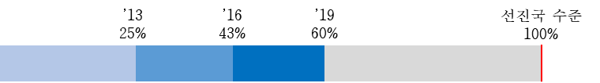
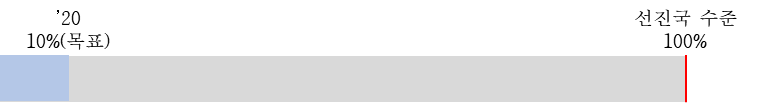
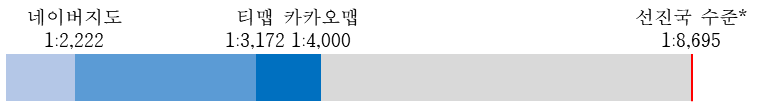
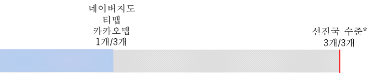

\textit{
이전된 정책의 경험시차 발생 요인 연구: 주소 정책을 중심으로
지도교수 최태현
이 논문을 행정학석사 학위논문으로 제출함
2020년 9월
서울대학교 행정대학원 행정학과 행정학전공 전영상
전영상의 석사 학위논문을 인준함
2020년 12월
}
우리나라에 도로명주소가 전면 시행된 지 7년째에 접어든다. 그럼에도 불구하고 여전히 많은 국민들이 실생활에서 목적지를 찾거나 자신의 위치를 설명할 때 도로명주소보다는 지번주소나 건물명, 아파트명 등 시설물명을 더 선호하는 이유는 무엇일까. 이 질문에 대한 답을 찾고자 이 연구에서는 우리나라 주소 정책의 도입 과정을 Dolowitz and Marsh(2000)의 불완전한 정책이전(incomplete policy transfer) 과정으로 이해하고, 주소 정책에 있어서 김태승(2015)이 제안한 개념인 경험시차가 발생하는 요인을 설명하였다. 먼저 2017년부터 2019년 사이 도로명주소에 관한 서울시 여론조사 결과를 분석하여 도로명주소의 식별 및 위치찾기(identification and location) 기능에 대한 경험시차가 발생하고 있음을 통계적으로 검증하였다. 다음으로 문헌 조사, 인터뷰, 공간정보 분석 등 과정추적법을 통하여 시간에 따른 주소 사용환경의 구축 실태를 도로명판 및 도로명 안내표지 등 오프라인 환경과 모바일 지도 및 내비게이션 등 온라인 환경으로 구분하여 분석하였다. 그 결과, 중앙정부와 지자체 간 인식 차이로 인하여 오프라인 주소 사용환경 구축이 지연되고 있었으며, 정부와 민간의 인식 차이로 인하여 온라인 주소 사용환경이 불완전하게 구현되고 있었다. 마지막으로 이 연구는 주소 정책의 경험시차를 단축시키기 위해서는 주소의 식별 및 위치찾기 기능을 명확히 정의하여야 하며, 특히 온라인 주소 사용환경을 구현하는 민간 업계와의 협력이 중요함을 제언한다.
주요어 : 정책이전, 시차이론, 숙성기, 경험시차, 도로명주소, 도로명판, 모바일 지도
학 번 : 2018-29973
It has been 7 years since Korea’s full implementation of the Road Name Address. However, why do so many citizens still prefer land-lot addresses or the names of facilities such as buildings and apartments in situations where one needs to search for or describe a certain location? To find the answer to this question, this study reviews the introduction process of the address policy in Korea as an ‘incomplete policy transfer’, presented by Dolowitz and Marsh (2000), and describes the factors that cause the time difference of policy experience, a concept proposed by Kim (2015), in address policy. First, this study analyzed the results of Seoul Metropolitan Government’s survey on the public opinion on Road Name Address conducted between 2017 and 2019. Study on the results confirmed that there was an time difference of policy experience in the location and identification function of the Road Name Address. Next, through process tracing methods such as literature research, interviews, and spatial analysis, the creation of the address usage environment has been analyzed over time in two parts: an offline environment such as road name signs for pedestrians and drivers, and an online environment such as mobile maps and navigation. Results show that, the construction of the offline address usage environment was being delayed due to the differences in perception between central and local governments. And online address usage environment was being incompletely implemented due to differences in perception between the government and private sectors. Finally, this study suggests that in order to shorten the time difference of policy experience in address policy, the location and identification function of address should be clearly defined, and in particular, cooperation with the private sectors that implements the online address usage environment is important.
keywords : policy transfer, time difference approach theory, maturation period, time difference of policy experience, Road Name Address, road name signs, mobile maps
Student Number : 2018-29973
특정 국가가 어떤 정책을 추진하는 이유에 대하여 그 나라의 역사를 모르고서는 아무도 설명할 수 없다(Diamond, 2019). 근대 이후로 세계 각국은 도로마다 이름을 붙이고 일정한 방향으로 도로에 인접한 건물에 번호를 매기는 방식인 도로명주소 체계를 받아들이고 오늘날까지 사용하고 있다. 그러나 그 주소체계를 받아들인 계기는 조금씩 다르며, 이는 그 나라의 역사와 밀접한 관련이 있다. 예를 들어 유럽은 영국과 프랑스를 시작으로 17~19세기 근대 주소체계로서 도로명 체계를 확립하였다(행정안전부, 2017)(Citation?). 북미 및 중남미, 동남아, 오세아니아, 아프리카 일부 국가는 이주 민족이 자국에서 본래 사용하던 주소체계가 도로명주소였기 때문에 이주한 지역에도 도로명주소를 정착시켰을 것이다. 중국은 공산화 과정(Russification: Zhang and Marsh, 2016)(Citation?)에서 러시아가 도로명주소를 사용하였기 때문에 그 영향을 받아 도로명주소를 받아들였다(행정안전부, 2017) (Citation?).
우리나라는 일제 강점기 당시 일본이 토지조사를 통하여 지번 체계를 주소로 활용토록 강제함에 따라 도로명주소가 아닌 지번주소가 먼저 정착되었다. 정부는 광복 이후 몇 차례 자발적으로 주소체계 개편을 시도하였으나 실패하였고, 그 사이 지번주소가 100여 년 간 지속 사용되었다. 1996년 정부 차원에서 도로명주소 제도를 도입키로 결정하고, 2006년 ｢도로명주소법｣ 제정, 2007년 시행하였으며, 2014년에는 도로명주소를 전면 사용하기 시작하였다.
우리나라가 도로명주소를 도입한 이유가 단순히 다른 나라들이 많이 사용하고 있기 때문만은 아니다. 가장 큰 이유는 지번 주소가 주소의 제 기능인 위치 인식 기능을 상실하였기 때문이었다. 지번도 부여된 초기에는 일정한 규칙 등 체계성이 존재하였으나, 급격한 도시화에 따라 필지가 분할·합병되다 보니 그 체계성이 훼손된 것이다. 이렇게 돌고 돌아 도입한 우리나라의 도로명주소를 국민들은 어떻게 사용하고 있을까? 도로명주소가 도입된 이후에도 여전히 많은 국민들은 약속장소나 배달주문 등과 같은 상황에서 목적지를 찾거나 자신의 위치를 설명할 때 도로명주소보다는 지번주소나 건물명, 아파트명 등 시설물명을 더 선호한다. 정책 도입 이후 얼마 정도의 시간이 지난 후의 결과를 효과로 측정할 수 있느냐는 불확실하다는 측면에서(정정길, 2002) (Citation?) 단순히 국민들에게 새로운 정책에 대한 순응 및 숙성 기간이 필요한 것일 수도 있으나, 이 연구에서는 주소 정책이 우리나라에 이전된 과정을 Dolowitz and Marsh(2000) (Citation?)가 제시한 불완전한 정책이전(incomplete policy transfer) 과정으로 이해하고, 우리나라 주소 정책에 있어서 불완전한 정책이전의 요인인 중대한 요소(crucial element)이자 김태승(2015) (Citation?)이 제안한 경험시차가 발생하는 요인을 구체적으로 살펴보고 개선방안을 제시하고자 한다.
이 연구의 공간적 범위는 우리나라 전국이며, 시간적 범위는 우리나라의 도로명주소 정책의 도입 및 정착 과정 전반으로서 1990년대부터 2020년 현재까지이다. 다만 주소 정책 도입의 배경을 설명하기 위하여 조선 말기부터 일제 강점기, 광복 이후 1980년대 일부까지도 포함될 수 있다. 이 연구는 다음과 같이 질적 연구 방법과 양적 연구 방법을 상호 보완적으로 혼합한 방법(남궁근, 2018:412) (Citation?)으로 수행한다. 첫째, 도로명주소 정책의 도입 과정을 정책이전 과정으로 이해하기 위하여 과정추적 기법을 활용하여 주소 정책의 추진 경과를 정리한다. 둘째, 우리나라 주소 정책에 대하여 경험시차가 발생하고 있는지를 통계적으로 검증하기 위하여 2017년부터 2019년까지 서울특별시가 실시한 도로명주소에 대한 시민인식 조사 결과에 대하여 ANOVA 분석을 실시하고 인지도 및 사용 경험이 있는 생활 분야, 불편사항의 개선 정도가 연도별로 차이가 있는지 확인한다. 셋째, 우리나라 주소 정책의 경험시차 발생 원인을 식별하기 위하여 각종 정부 보고서와 행정안전부, 한국지역정보개발원 관계자 및 공간정보 분야 전문가 등 인터뷰, 모바일 지도 및 내비게이션 업계의 동향 및 연도별 기능 업데이트 내역 등을 조사한다. 이 때 도로명주소와 관련된 정보시스템, 안내시설, 지도표기 등에 관한 기술적인 문헌도 함께 검토하며, 주소 사용환경을 분석하기 위하여 2013년부터 2019년까지 연도별 도로명판 설치 수량 및 교차로 당 최소 소요 요구 도로명판 수량을 조사하고, 모바일 및 내비게이션 앱별로 화면 상에서 도로명이 최초로 표출될 때의 축척을 측정한다. 마지막으로 식별해 낸 요인들을 분석하고, 주소 정책의 경험시차 단축 방안을 제언한다.
This is a brief outline of what went
into each chapter, and a section which
shows how to reference headers (which
are labelled automatically for you).
This chapter, Section 1, shows how to
use citations and how to reference
section headers. Section 2 shows how use
and reference equations. Section 3 shows
how to use and reference code. Section 4
shows how to use, reference, and resize
pdf and jpg figures. Section 5 shows how
to use and reference tables. Section 6
is truly revolutionary (but shows
nothing functional). Appendix
1 shows how to add chapters
which are not numbered, and has to be
referenced manually, as does Appendix
2. See the base README.md
for how References are handled - leave
*_references.md alone, and
provide it to pandoc
last.
Proin faucibus nibh sit amet augue blandit varius.
This is the literature review. Nullam quam odio, volutpat ac ornare quis, vestibulum nec nulla. Aenean nec dapibus in mL/min-1. Mathematical formula can be inserted using Latex and can be automatically numbered:
f(x) = ax3 + bx2 + cx + d (1)
Nunc eleifend, ex a luctus porttitor, felis ex suscipit tellus, ut sollicitudin sapien purus in libero. Nulla blandit eget urna vel tempus. Praesent fringilla dui sapien, sit amet egestas leo sollicitudin at.
Later on in the text, you can reference Equation 1 and its mind-blowing ramifications. Pellentesque habitant morbi tristique senectus et netus et malesuada fames ac turpis egestas. Sed faucibus pulvinar volutpat. Ut semper fringilla erat non dapibus. Nunc vitae felis eget purus placerat finibus laoreet ut nibh.
The following raw text in markdown
behind Equation 2 shows that you can
fall back on if it is more convenient
for you. Note that this will only be
rendered in thesis.pdf
$$ \begin{aligned} \hat{\theta}_g = \argmin_{\theta_g} \Big\{ - &\sum^{N}_{n=1}\Big( 1-\mathbb{1}[f(\pmb x^{(n)})]\Big)\log f\Big(\pmb x^{(n)} \\ &+ g(\pmb x^{(n)};\theta_g)\Big) + \lambda|g(\pmb x^{(n)};\theta_g)|_2 \Big\} \ , \end{aligned} \qquad{(2)}$$
정책이전(policy transfer)이란 특정 시간 및/또는 장소에서의 정책, 행정절차, 제도 등에 대한 지식이 다른 시간 및/또는 장소에서의 정책, 행정절차, 제도 등의 개발하는데 사용되는 과정(Dolowitz and Marsh, 1996)을 말한다. Dolowitz and Marsh(2000)는 정책이전의 배경, 정책이전 과정의 참여주체, 이전 대상, 어디에서(또는 어디로) 이전되는지, 이전의 정도, 제약조건, 정책 이전이 증명되는 방법, 실패 유형 등 정책이전을 이해하고 설명할 수 있는 8가지 질문으로 구성된 프레임워크를 제안하였으며, 세부 내용은 [표 2-1]과 같다.
[표 2-1] 정책이전 프레임워크
정책이전의 배경은 자발적 요인과 강제적 요인, 복합적 요인으로 구분된다(Dolowitz and Marsh, 1996). 자발적 요인은 현 상황에 대한 불만족과 발생한 문제에 대한 해결책을 찾기 위한 합리적인 반응으로서 문제 해결을 위한 쉬운 수단, 완벽한 합리성에 기반한 교훈 얻기(lessondrawing)라고 할 수 있다. 강제적 요인은 국제기구 가입이나 조약 체결 등의 요인에 따르게 된 의무적인 정책이전이다. 복합적 요인은 어느 정도의 자발성을 갖지만 필요에 따라 불가피하게 선택되는 경우로, 제한적인 합리성에 기반한 부분적인 정책이전이다. 대부분의 정책이전 사례들은 자발적 요인과 강제적 요인이 복합적으로 작용하며, 특히 이전 과정에서 국제기구의 개입은 자발적 요인과 강제적 요인 사이의 구분을 불명확하게 만들기도 한다(Dolowitz and Marsh, 2000).
Dolowitz and Marsh(1996; 2000)는 정책이전의 참여주체로 선출직 공무원, 정당, 관료, 이익집단, 정책 기업가 및 전문가, 다국적 기업, 싱크탱크, 초국가 정부 및 비정부 기구와 컨설턴트 등 9개 주체를 제시하였으며, 이전의 대상으로는 정책 목표, 정책 내용, 정책 도구, 정책 프로그램, 제도, 이데올로기, 아이디어와 태도, 부정적인 교훈(negative lesson) 등 8가지를 제시하였다. 특히 Dolowitz and Marsh(2000)는 정책 입안자가 제시하는 방향을 의도하는 ’정책(policy)’과, 그 정책을 집행하는 데 사용되는 행동 과정의 특정한 수단인 ’프로그램(program)’을 구분하여야 하며, 정책과 프로그램 둘 다 이전의 대상이 될 수 있음을 설명하고 있다.
한편 본국의 부정적인 교훈도 정책이전의 대상이 될 수 있는데(Dolowitz and Marsh, 1996), 정준금(2006)은 우리나라가 일본이 정부의 개입을 과도하게 하여 금융권의 구조조정이 늦어지는 것을 보고 우리나라 금융권의 구조조정에 정부 개입을 최소화하기로 결정한 것을 부정적인 교훈이 이전된 사례로 보았다.
Dolowitz and Marsh(2000)는 정책이전이 실패에 이르는 경우를 불충분한 정보에 기반한 정책이전(uninformed transfer), 불완전한 정책이전(incomplete transfer), 부적절한 정책이전(inappropriate transfer)의 세 가지 경우로 구분하였다. 첫째, 불충분한 정보에 기반한 정책이전은 차용국이 이전되는 정책 또는 제도, 또는 기존 국가에서 시행되는 방식에 대한 정보를 충분히 갖고 있지 않은 경우를 말한다. 둘째, 불완전한 정책이전은 기존 국가에서 해당 정책을 성공으로 이끈 중대한 요소(crucial element)가 이전되지 않은 경우를 말한다. 마지막으로 부적절한 정책이전은 기존 국가와 차용국 간의 경제적, 사회적, 정치적, 그리고 이념적 문맥의 차이가 충분히 고려되지 않았을 경우를 말한다.
정책이전 결과에 대한 평가 방법에는 두 가지 관점이 있는데, 하나는 정책결정가의 입장에서 본래 의도한 정책 목적이 달성되었는지 여부를 판단하여야 한다는 견해(Dolowitz & Marsh, 1996; 정창호, 2013:92에서 재인용)이며 다른 하나는 그 정책이 이전되는 과정, 프로그램, 정치적 측면을 구분하여 평가해야 한다는 견해(Marsh & McConnel, 2010; 정창호, 2013:92에서 재인용)이다. 이 연구에서는 전자의 견해가 이 연구가 다루는 연구 문제에 적합하다고 보고, 전자의 관점에서 주소 정책의 이전 결과를 분석하고자 한다.
시차이론 또는 시차적 접근 방법은 인과관계에 시간적 차이가 개입하고 있음을 전제로 하며, “특정 현상을 발생시키는 주체의 속성이나 행태가 시간적 차이를 두고 변화되는 사실을 사회현상연구에 적용하려는 연구방법”으로 정의된다(이시원, 2013). 시차이론은 정책주체의 인지상 시차나 정책의 시간적 선후관계, 작동순서 등을 중요 변수로 하여 정책현상을 설명하며, 실천적인 측면에서 제도변화나 개혁에 있어서 시간적인 측면을 고려하도록 함으로써 현실적합성이 높은 개혁전략을 마련하는데 도움을 준다(정정길 등, 2020:718;780).
숙성기간이란 새로운 제도가 도입되어 소기의 효과를 낼 수 있을 정도로 효과를 발휘하는 데 걸리는 시간을 말한다(정정길, 정준금, 2005:101). 정책 순응이란 “정책이나 법규에서 요구하는 행동에 따르는 행위”(정정길 등, 2020:546)이며, 정정길 등(2020:553)은 Etzioni(1968)가 조직이 목표 달성을 위하여 구성원을 움직이는 수단으로 제안한 도덕적 설득, 지원, 처벌 또는 강압 등 세 가지를 3대 순응확보수단으로 보고 있다. 김태승(2015)은 정책도입과 함께 3대 순응확보수단을 통하여 일정 수준의 정책순응이 형성되며, 숙성기간 동안 학습효과에 의하여 순응이 강화된다고 설명한다.
｢도로명주소법｣ 제19조는 “도로명주소는 다른 법률에도 불구하고 공법관계에서의 주소로 한다”고 규정하고 있는데, 이렇게 도로명주소의 ’의무 사용’에 대한 법적 근거를 마련한 것은 국민들에게 도로명주소의 사용에 대한 강압적인 수단은 아니지만 의무감을 지워준다는 측면에서 도덕적 설득 수단이라고 볼 수 있다. 또한 현장의 안내시설 설치, 온라인 주소 입력 환경 등 주소 사용환경을 도로명주소 친화적으로 개선하는 것, 도로명주소 사용에 관한 이벤트나 수기 공모전, TV광고 등 홍보 활동은 지원 수단이라고 할 수 있다. 마지막으로 도로명주소 외 지번주소를 표기한 우편물에 대하여 규격 외 추가요금을 징수하는 것은 일종의 처벌 또는 강압의 수단이라고 할 수 있다. 이러한 3대 순응확보수단을 통하여 도로명주소에 대한 순응은 일정 수준까지는 형성되나, 이 순응이 강화되기 위해서는 도로명주소에 대한 학습효과가 발현되는 시간이 필요하다고 할 수 있다.
김태승(2015)은 숙성기의 인과적 메커니즘을 설명하면서 경험시차(time difference of policy experience)라는 개념을 제안하였는데, 여기서 경험시차란 숙성기간 동안 개인에게 학습효과가 발현되는 과정에서 비롯되는 시간적 지연을 말한다. 즉, 이는 숙성기간을 정책대상자 입장에서 설명하는 것으로, 새로운 정책의 내용을 체감하는 데 일정한 시간이 필요하다고 보는 것이다. 정홍원 등(2016)이 “사회보장정책에서 ’체감도’에 대한 언급이 빈번해지고 있으며, 정책의 성과를 평가하는 기준으로 체감도를 활용하는 사례가 증가하고 있는 추세”라고 한 바와 같이 어떤 정책이 좋은 정책인지 판단하는 기준으로 정책대상자의 체감도가 높은지를 판단하는 것이 중요해지고 있다. 이러한 점에서 경험시차 개념을 통하여 숙성 기간의 인과적 메커니즘을 설명하는 것은 의의가 있다고 할 수 있다.
김태승(2015)은 경험시차에 영향을 미치는 두 가지 요인으로 정책 고유의 체험가능성과 집행수단의 성격을 제시하였는데, 이는 정책대상자가 특정 정책을 직접 경험할 가능성이 높고 집행수단의 강제성이 클수록 경험시차가 짧아짐을 의미한다. 김태승(2015)이 제안한 숙성기의 인과적 메커니즘은 [그림 2-1]과 같다.
[그림 2-1] 숙성기의 인과적 메커니즘
도로명주소에 대한 체험가능성은 이 연구에서 중점적으로 다룰 부분인데, 김태승, 권혁신(2015)은 도로명주소가 국민들이 그 편리함을 경험하기 위하여 상당한 양의 학습활동이 요구된다는 점에서 체험가능성이 낮고, 사실상 도로명주소를 사용하지 않을 때에는 종전의 지번주소를 사용해도 아무런 문제가 없다는 점에서 강제적인 집행수단이 없기 때문에 경험시차가 발생한다고 지적하였다. 다시 말해서 주소 정책에 대한 경험시차를 단축시키기 위해서는 도로명주소에 대한 체감도가 높아지도록 국민들이 일상생활에서 주소의 편리함을 잘 경험할 수 있는 환경을 조성하는 것이 유일한 방법이라고 말할 수 있다.
일반적으로 이전된 정책을 받아들이는 차용국은 기존 국가에서와 정치적, 사회적, 문화적 환경이 완전히 다르다. 성공적인 정책이전으로 평가되는 사례들은 그 특정 국가의 고유한 상황에 대한 충분한 사전지식과 이해가 있었다고 평가되는 것(행정자치부, 2015)은 이 때문이다. 한편 본국에서는 짧게는 수십 년, 길게는 수백 년 간 안정적이고 장기간에 걸쳐 정착된 정책을 차용국에서는 단기간 내에 이전시키려고 하는 경우가 많다. 따라서 정책이전 시에는 위와 같은 환경 차이에 대한 이해뿐만 아니라 시간적인 요소도 반드시 고려되어야 한다. 특히 시간적인 요소가 기존 국가에서 해당 정책을 성공으로 이끈 중대한 요소(crucial element)와 관계된다면 그 정책은 불완전하게 이전된 정책이 되어 버릴 것이다. 따라서 정책이전 시 또는 이전된 정책에 대하여 시간적인 요소를 고려하는 것은 그 의의가 크다고 판단된다.
김태승, 권혁신(2015)이 도로명주소 사용에 있어서 상당한 양의 학습 활동이 요구된다고 지적한 것은 주소를 사용하는 빈도에 개인차가 있음은 별론으로 하고, 사용빈도에 관계없이 주소의 특정 요소에 대하여 도로명주소와 지번주소 사이의 차이가 크기 때문일 것이다. 도로명주소와 지번주소 사이의 차이가 크면 정책대상자가 도로명주소에 대한 학습에 더 많은 양의 노력이 필요한 것이고 결과적으로는 이 노력의 양을 줄이는 정책집행 방식이 주소 정책의 경험시차를 단축시키는 방안이 될 것이다.
주소에 관하여 우리나라 ｢민법｣ 제18조 제1항에서는 “생활의 근거가 되는 곳을 주소로 한다”라고 정의하고 있다. ｢주민등록법｣ 제23조에는 “다른 법률에 특별한 규정이 없으면 이 법에 따른 주민등록지를 공법(公法) 관계에서의 주소로 한다.”라고 규정하고 있다. ｢도로명주소법｣ 제2조제1호에는 ““도로명주소”란 이 법에 따라 부여된 도로명, 건물번호 및 상세주소(상세주소가 있는 경우만 해당한다)에 의하여 표기하는 주소를 말한다.”라고 규정1하고 있다. ｢도로명주소법｣은 2006년 10월 4일 제정, 2007년 4월 5일 시행되었으며, 주소에 관한 한 다른 법률에 우선하여 적용(제3조)토록 규정2하고 있어 부동산 토지거래 시를 제외하고는 행정의 모든 분야에서 공적 주소로 사용되고 있다.
국제표준화기구(ISO 19160-1)3는 주소(address)를 “식별 및 위치 찾기(identification and location)를 목적으로 객체의 명확한 결정을 가능하게 하는 구조화된 정보4”로 정의한다(ISO, 2015). ISO가 도로명주소를 국제표준으로 정하고 있는 것은 아니다. ISO(2015)는 주소체계가 국가별로 다양하다고 설명하나, 유럽 중심 국가는 대부분 주소가 도로망에 따른 참조로 표현되는 것이 일반적이라고 설명하면서 우리나라와 일본은(우리나라는 종전의 지번주소를 도로명주소로 전환 중임을 언급) 주소가 철저한 참조 없이 행정구역의 계층적인 구조로 구성된다고 설명하고 있다. 즉, ISO는 지번주소가 우리나라와 일본에서 주소로 사용되고는 있으나 도로명주소만큼 주소의 제 기능을 충실히 구현할 수는 없음을 설명한 것이라고 할 수 있다.5
주소의 제 기능은 앞서 국제표준화기구(ISO, 2015)에서 정의하는 ’식별(identification)’과 ’위치 찾기(location)’이다. 우리나라가 그동안 사용하던 지번주소에는 ’식별’과 ’위치 찾기’라는 주소의 제 기능이 없었다. 인간의 생활 근거지는 건물이지만 지번은 토지에 매겨지는 번호이기 때문이다. 하지만 새로 도입하는 도로명주소는 건물에 매겨지는 주소이므로 ’식별’과 ’위치 찾기’라는 주소의 제 기능을 다할 수 있게 되었다.
도로명주소란 도로명과 건물번호를 기반으로 한 주소체계로 ｢도로명주소법｣에 따라 도로명, 건물번호, 상세주소(상세주소가 있는 경우만 해당한다)로 구성된다. 도로명은 지역적 특성, 역사성, 위치 예측성, 영속성, 지명(地名)과 지역주민의 의견 등을 종합적으로 고려하여 정한 주된 명사에 도로의 폭에 따라 구분한 ｢대로｣, ｢로｣, ｢길｣ 등의 도로구분을 붙여서 부여·변경된다. 만일 주된 명사 뒤에 숫자나 방위를 붙일 경우 그 숫자나 방위도 주된 명사의 일부분으로 본다. 건물번호는 해당 건물등의 주된 출입구에 접하고 있는 도로구간의 기초번호를 기준으로 부여·변경 된다. 여기서 기초번호는 도로구간의 시작지점부터 끝지점까지 일정한 간격으로 부여된 번호로서 20미터 간격으로 부여하는 것을 원칙으로 하되, 지역특성을 고려하여 간격을 달리하여 부여할 수 있다. 행정안전부에 따르면 2020년 10월 말 현재 전국에 부여된 도로명주소는 6,304,193개, 도로명은 165,392개이다. [표 2-2]는 도로명 부여 방법 및 해당 방법별 도로명 부여 예시 및 이에 대응하는 해외사례를 보여준다. 한국행정연구원(2011)은 도로명주소 사업의 사회적 편익은 비용의 최소 12배에서 최대 132배인 것으로 분석하였다.
[표 2-2] 도로명 부여 방법 및 사례6
도로명주소의 기능은 도로명주소 관련 중앙 정부 및 지방자치단체, 민간부분이 도로명주소 관련 활동을 수행하는데 요구되는 일정한 능력이나 작용으로 볼 수 있다(한국지적학회, 2008). 이러한 도로명주소의 기능 중 일반적인 기능은 경제적·행정적·사회적·법적 및 공시의 기능을 내포하고 있다.
한편 이 연구에서는 국제표준화기구 정의에 입각하여 “식별 및 위치 찾기” 측면에서의 주소의 기능에 초점을 맞추고자 한다. 김선일, 허용훈(2015)은 도로명주소가 도로좌표계(street coordinate)로서 도로를 따라 도로의 기점에서 지점까지의 거리를 숫자로 표현하기 때문에 모든 위치를 도로명과 기초번호로 지오코딩(geocoding)하여 위치표현(locating), 경로표현(routing) 등의 기능에 활용할 수 있다고 하였다. 이러한 지오코딩을 주소의 필수적인 기능으로 본다면 우리나라가 그간 사용해 온 지번주소는 이러한 지오코딩의 기능이 거의 없었기 때문에 사실상 우리나라에는 주소가 없었던 것이나 다름이 없다는 학자들의 견해도 있다. 국민들은 실생활에서 지번만으로는 불충분했던 위치표현, 경로표현 등의 기능을 보완하기 위해 법정주소의 구성요소가 아닌 사거리명, 건물명, 아파트명, 주변 건물·시설물명(예: 00빌딩 건너편, 00은행 맞은편 등) 등을 활용해 왔다.
[표 2-3] 도로명주소의 위치표현 및 경로표현 기능
많은 선행연구에서 도로명주소 체계가 국민들의 생활에 정착이 늦어지는 것에 관하여 문제점을 지적하고 정책방향을 제언하였다. 국회입법조사처(2011)는 도로명주소의 미정착 원인으로 강력한 사업 추진체계의 부재, 공공기관 및 민간부문과의 공조 결여를 꼽았다. 민간부문과의 공조를 위해 정부가 주소전환 우수기관에 대한 인센티브를 제공할 것을 제안하였다. 김태승 등(2015)은 도로명주소사업이 당위성의 차원에서 정책순응의 토대가 취약했다는 점, 정부가 사용할 수 있는 강제적 집행수단의 부재했다는 점, 내비게이션 등 IT기술의 발달로 인해 새로운 정책체험이 지연되어 경험시차가 길어질 수밖에 없었던 점을 도로명주소 정착이 늦어지는 원인으로 지적하면서, 특히 도로명주소 정책의 숙성기에서 성공적 효과를 이끌어내기 위해서는 정부가 국민의 단순한 정책 경험이 아닌 정책의 체험가능성과 정책교육 효과를 높일 수 있는 대안을 선택해 시행해야 할 것이라고 제언하였다. 이러한 점은 도로명주소 사업의 경제성 분석 시에도 이미 가정한 사항으로, 한국행정연구원(2011)은 도로명주소의 학습이 명시적인 교육을 통해 이루어지기보다는 도로명주소 사용을 위한 환경이 성숙되고 주변의 도로명주소 이용자가 증가하고 주위 환경의 건물 및 도로명 표지판 등 일상생활 속에서 다양한 기회를 통해 이루어진다고 가정하고 경제성 분석을 실시하였다.
경기연구원(2016)도 도로명주소 인지도 향상을 위해서는 일상에서 자주 도로명주소를 노출하는 것이 중요함을 지적하였다. 대전세종연구원(2018)은 면 또는 점의 형태로 이루어진 지번주소에 비해 도로명주소는 선으로 이어진 도로에 건물번호를 부여하는 방식으로서 면, 점으로 공간적 위치 인식에 익숙한 사람은 도로명주소에 익숙해지는 데 어려움이 있다고 지적하였다.
최진무 등(2014)은 도로명주소안내도 일반화 방법론을 제시하기 위해 널리 사용되는 온라인 지도인 네이버 지도와 다음 지도를 도로명주소안내도와 같은 레벨에서 표현되는 사상에 차이가 있는지 확인해 보았다. 그 결과 도로명주소안내시스템은 주 목적이 도로명안내이기 때문에 도로명과 건물번호를 더 많은 레벨에 걸쳐 나타낸 반면, 네이버와 다음 지도의 경우 건물번호는 레벨 14(최대레벨)에만 표기하고 레벨 13 이하에서부터는 표기를 하지 않았다.
위와 같은 선행연구에서는 공공기관 및 민간부문과의 공조 필요성, 정책의 체험가능성 및 교육효과의 제고 필요성, 인식 개선의 필요성을 제기하기는 했으나, 민간부문과의 공조에 대한 제언이 주소전환 부문에만 그쳤고 실제 생활 속에서 주소 사용환경의 개선방안에 대한 제언은 없었다는 점, 체험가능성 및 인식개선의 구체적인 방안을 제공하지는 않았다는 점에서 한계가 있다. 또한 최진무 등(2014)의 연구에서는 도로명주소 안내도의 개선 방향만 제시하였지, 정부의 입장에서 네이버 지도와 다음지도 등을 도로명주소를 사용하기 편리한 환경으로 개선하는 방향은 제시하지 않았다.
For syntax highlighting in code blocks, add three “`” characters before and after a code block:
Listing 1: Code caption
mood = 'happy'
if mood == 'happy':
print("I am a happy robot")You can then reference the code block like this (Listing 1).
By running the code in Section ¿sec:subsec-code?, we solved AI completely. This is the second part of the methodology. Proin tincidunt odio non sem mollis tristique. Fusce pharetra accumsan volutpat. In nec mauris vel orci rutrum dapibus nec ac nibh. Praesent malesuada sagittis nulla, eget commodo mauris ultricies eget. Suspendisse iaculis finibus ligula.
이 연구의 목적은 “우리나라 주소 정책에 경험시차가 발생하는 이유는 무엇인가”를 알아보는 것이다. 이를 위한 분석틀로는 Dolowitz and Marsh(2000)이 제안한 불완전한 정책이전과 김태승(2015)이 제안한 숙성기의 경험시차와 인과적 메커니즘을 결합하여 적용하고자 하며, 그 내용은 [그림 3-1]과 같으며, 연구 목적에 대한 해답을 찾기 위하여 아래와 같이 하위 연구 문제 1~3으로 연구 문제를 세분화하였다.
이 연구에서는 우리나라의 도로명주소 정책 도입을 정책이전의 한 사례로 보고 있으며, Dolowitz & Marsh(2000)의 견해에 따라 본래 의도한 정책목표의 달성 여부를 가지고 결과를 평가하고자 한다. 이 연구에서는 우리나라 주소 정책이 본래 의도한 정책목표를 국민들이 실생활의 모든 분야에서 ISO의 주소의 정의에 입각한 ‘식별 및 위치찾기’7라는 주소의 제 기능을 활용하는 데 무리가 없는 환경을 조성하는 것으로 설정하고, 경험시차가 발생하고 있다면 이를 불완전하게 이전된 정책으로 진단하고자 한다. 따라서 우선 주소 정책의 경험시차가 발생하고 있는지 여부를 확인할 필요가 있으며, 이는 주소 정책의 인지도 또는 불편사항의 개선 정도가 시간에 따라 달라지는지를 알 수 있는 패널 데이터를 활용하여 확인할 수 있다.
하위 연구 문제 1. 우리나라 주소 정책에 있어서 경험시차가 발생하고 있는가?(=우리나라 주소 정책은 완전하게 이전되었는가?)
하위 연구 문제 1에 대한 결론이 우리나라 주소 정책에 있어서 경험시차가 발생하고 있다고 도출된다면, 즉 우리나라 주소 정책의 이전은 불완전하게 이전된 정책이라면, 타 국가에서 해당 정책을 성공하게 만들었던 정책 또는 제도적 구조의 요소가 어떤 것인지를 알아보아야 할 것이다. 이에 대하여 이 연구에서는 주소 사용환경이라는 개념에 주목하고자 한다. 주소 사용환경이란 주소 사용자가 주소를 접하는 모든 환경을 말한다. 주소 사용환경은 온라인과 오프라인으로 구분할 수 있으며, 오프라인상 주소 사용환경은 보행자를 위한 도로명판, 건물번호판, 기초번호판, 차량용 도로명 안내표지, 공적장부 상 주소, 광고물, 청첩장 등 각종 유인물 상 주소 등이, 온라인상 주소 사용환경에는 스마트폰 지도, 내비게이션 등 경로탐색, 금융거래, 쇼핑, 배달음식 주문 시의 주소 입력 및 위치 안내 등이 있다.
도로명주소를 오래전부터 사용해 온 대부분 국가에서는 자연스럽게 도로명주소의 ‘식별 및 위치찾기’ 기능이 발휘되도록 주소 사용환경이 발달하였다. 그러나 우리나라의 경우에는 주소 사용환경이 지번주소 중심이었기 때문에 이를 도로명주소 중심으로 바꾸는 새로운 노력이 추가적으로 필요하다. 이는 정책이전 과정에서 기존 국가에서는 필요 없었던, 또는 자연스럽게 이행되었던 노력에 해당한다.
도로명주소 도입 초기 우리 정부는 오프라인상 주소 사용환경 구축에 중점을 두었으나, 스마트폰, 내비게이션 등의 발달에 따라 온라인상 주소 사용이 급격히 증가하고 있기 때문에 온라인상 주소 사용환경 또한 도로명주소 친화적으로 조성하고 있다. 2016년 이후 행정안전부와 한국지역정보개발원은 도로명주소 안내 홈페이지에 ‘도로명주소 개발자센터’ 홈페이지를 개설하여 최신지도 raw data 공간정보(지도정보)를 제공하고, 우편, 물류(택배) 등에서 활용 가능하도록 정제한 문자형식 주소정보를 제공한다. 2019년 현재 주소정보 다운로드 수는 17만 건, 지도(공간)정보 다운로드 수 8천 건이다(행정안전부, 2019). 또한 개인 또는 사업자가 홈페이지 상에 도로명주소 및 영문 도로명주소 입력시스템을 손쉽게 구축할 수 있도록 OpenAPI 소스를 제공하며, 검색되지 않는 도로명주소가 없도록 일변동 도로명주소 데이터베이스를 업데이트하여 제공하고 있다.
하지만 이러한 정부의 노력은 여전히 주소의 표기방식을 전환하기 위한 노력으로만 국한되며, 도로명주소의 ‘식별 및 위치찾기’ 기능이 발휘되기 위한 기반조성으로 보기는 어렵다. 방윤식, 유기윤(2016)은 국민들로 하여금 도로명주소 기반의 공간 인식체계를 자리잡도록 하는데 ‘길찾기’ 과정에서 도로명주소를 활용토록 하는 것이 매우 중요함을 지적하였는데, 이는 길찾기 과정이 공간 탐색이 가장 적극적으로 이루어지는 행위이기 때문이다. 이러한 점에서 국민들이 길찾기 과정에서 도로명주소를 사용토록 하는 기반 환경을 조성하는 것은 김태승, 권혁신(2015)이 언급한 도로명주소의 편리함을 경험하는 데 필요한 학습 시간, 즉 경험시차를 단축시킬 수 있는 직접적 경험을 제공하는 것이라고 할 수 있다.
앞서 경기연구원(2016)이 도로명주소 인지도 향상을 위하여 일상에서 자주 도로명주소를 노출하는 것이 중요하다고 한 것은 이와 같은 맥락이다. 따라서 주소 정책의 이전과정요소이자 시차를 발생시키는 요인 중의 하나로서 우리나라의 주소 사용환경이 자주 도로명주소를 확인할 수 있고 길찾기에 불편함이 없도록 구축되었는지를 확인해 볼 필요가 있다. 특히 도로명주소 전면사용 시점과 비교했을 때 주소 사용환경의 구축 시점에 지연이 있었는지를 확인하고, 지연이 있었다면 얼마만큼의 지연인지, 그 원인이 무엇인지 분석해 볼 필요가 있다. 따라서 다음과 같은 연구 문제를 설정하였다.
하위 연구 문제 2. 주소 사용환경 조성이 지연되고 있는가?
주소 정책에 있어서 주요한 정책 주체는 주소 사용환경별로 다르다. 도로명판, 건물번호판 등 현장에서 확인할 수 있는 도로명주소 안내시설의 신규 설치, 유지보수 등과 같은 오프라인 주소 사용환경의 조성은 주로 관이 주도적인 역할을 하는 반면, 온라인 주소 사용환경의 조성에 대해서는 – 비록 지도 원본 데이터는 정부로부터 제공받더라도 - 네이버, 카카오, 구글 등 주로 IT 업계가 그 역할을 독점하고 있다고 할 수 있다. 앞서 ‘위치 찾기 패러다임의 변화’ 절에서 살펴보았듯이, 최근 10년간은 스마트폰이 대중화됨에 따라 위치 찾기 시 모바일 지도와 내비게이션 앱에 대한 의존도가 증가함에 따라 주소 정책에 있어서 민간의 기여도와 중요성 또한 커지고 있다고 볼 수 있다. 따라서 이 연구에서는 Dolowitz와 Marsh의 논지와 최근의 위치 찾기 패러다임의 변화를 토대로 하여 도로명주소 정책의 완전한 이전에 민간기업이 어떠한 역할을 수행하고 있는지를 알아볼 필요가 있다고 판단하고, 위의 연구 문제 2를 온라인과 오프라인 주소 사용환경으로 분리하여 제시하고자 한다.
하위 연구 문제 2-1. 오프라인 주소 사용환경 조성이 지연되고 있는가?
하위 연구 문제 2-2. 온라인 주소 사용환경이 불완전하게 조성되어 있는가?
앞절에서 살펴보았듯이 정책이전 과정에서는 관료뿐만 아니라 압력단체, 민간기업, 초국가 기구 등 여러 주체가 고유의 역할을 수행하며, 이는 주소 정책에 있어서도 마찬가지이다. 그러나 정책이전 주체 간 정책목표에 대한 인식 차이가 있거나 정책이 정착되는 시간 개념의 차이가 있다면 앞절의 주소 사용환경 조성 지연의 원인으로 작용할 수 있다. 국회입법조사처(2011)는 도로명주소의 미정착 원인으로 정부·지자체를 포괄하는 조직과 예산 등 강력한 사업 추진체계의 부재, 공공기관 및 민간부문과의 공조 결여를 꼽았다. 방윤식, 유기윤(2016)은 “도로명주소 체계가 길찾기에 편리하다는 점이 홍보되고는 있으나 정작 길찾기 또는 길안내 서비스에서는 도로명주소가 많이 활용되지 않고 있다”고 지적하였는데, 이는 정부와 길찾기 또는 길안내 서비스를 제공하는 민간 업계 간의 인식 차이가 있기 때문일 가능성이 있다. 따라서 주소 사용환경 조성에 대한 정책주체 간 인식 차이가 있는지를 알아보고자 한다. 오프라인 주소 사용환경의 조성은 주로 정부가, 온라인 주소 사용환경의 조성은 민간(IT 업계)이 주도적인 역할을 하므로, 앞절에서와 같이 연구 문제를 두 가지로 나누어 살펴보고자 한다.
하위 연구 문제 3-1. 오프라인 주소 사용환경 조성이 지연되는 원인은 무엇인가?
하위 연구 문제 3-2. 온라인 주소 사용환경이 불완전하게 조성된 원인 은 무엇인가?
이 연구는 [그림 3-2]와 같이 Creswell(2015)이 제시한 통합적 설계(남궁근, 2018:415)로서 질적 연구 방법과 양적 연구 방법을 상호 보완적으로 혼합한 방법(남궁근, 2018:412)으로 진행하였다. 정정길 등(2020:745)은 “질적 연구는 객관적으로 보아 확실하지는 않지만, 몇 가지 정황으로 보아 가능한 추론도 중요한 연구내용으로 받아들인다”고 하였으며, 남궁근(2018:414)은 “사회현상의 구조와 과정을 종합적으로 이해하고자 할 경우, 질적 연구가 양적 연구를 위한 준비 작업으로서 필요한 경우, 양적 연구가 선행되어 질적 연구의 자료수집의 보조수단으로 활용되는 경우 혼합방법이 사용될 수 있다”고 하였다. 이 연구에서 이러한 혼합방법을 채택한 배경을 구체적으로 언급하면 다음과 같다.
첫째, “시차연구의 특성 상 각 변수와 관련한 시차의 영향을 정확히 구분하여 논의하기가 쉽지 않으므로”(이시원, 2013:227), 이 연구의 연구문제인 ’우리나라 주소 정책에 경험시차가 발생하는 이유는 무엇인가’에 대한 해답을 찾기 위해서는 우선 우리나라 주소 정책이 이전된 경과를 탐색하고 이를 통하여 주요 변수를 명확히 하는 과정이 필요하다고 판단하였다. Falleti and Lynch(2009)는 “변수가 특정 사례의 속성을 측정한다면, 인과 메커니즘(casual mechanism)은 입력과 출력을 연결하는 근본적인 사회적 과정을 밝혀낸다”고 한 것은 이를 뒷받침한다. 아울러 연구문제 2-1 및 2-2에 대한 해답이라고 할 수 있는 연구 문제 3-1, 3-2를 보강하기 위해서는 정책주체별 입장을 확인할 수 있는 인터뷰를 수행함으로써 다각적인 검토를 할 필요가 있었다.
둘째, 이 연구에서는 하위 연구 문제 1에서 제시한 바와 같이 주소 정책에 경험시차가 발생하는지 여부를 확인하여야 하는데, 이를 위해서는 도로명주소의 인지도나 사용 경험, 불편사항 등을 묻는 패널데이터를 통하여 주소 정책의 효과가 시간에 따라 일정한지 아니면 개선되고 있는지를 확인하는 양적 자료수집 및 분석 과정을 통하여 밝혀내는 것이 설득력이 있을 것으로 판단하였다. 아울러 하위 연구 문제 2-1 및 2-2에서 제시한 바와 같이 온라인 및 오프라인 주소 사용환경 조성이 지연되었는지를 확인하기 위하여 길찾기에 필요한 주소 사용환경의 핵심이 되는 도로명판의 연도별 수량 및 모바일 지도 상의 도로명주소 구현이 시간에 따라 개선이 되고 있는지를 비교하는 것이 적절할 것으로 판단하였다.
[그림 3-2] 통합적 설계
이 연구에서는 과정추적법을 적용하여 우리나라 주소 정책이 도입된 당시인 1990년대 중반 이후 현재까지 수행된 내부보고서, 정책연구, 언론보도, 정치적 상황을 알 수 있는 국회 소관위원회 검토보고서 및 회의록 등 질적인 자료를 수집하여 우리나라 주소 정책의 이전 과정을 분석하고, 이를 우리나라 주소 정책만의 독특성을 밝혀내는 데 활용하였다.
이 연구에서는 주소 정책의 경험시차가 발생하고 있는지 여부를 확인하기 위하여 서울특별시가 2014~2019년 실시한 “도로명주소에 대한 시민인식 조사” 중 일부 질문에 대한 응답 결과를 분석하고, 2017년부터 2019년까지 데이터는 연도별로 응답에 차이가 있는지를 알아보기 위하여 R 통계 프로그램을 활용하여 ANOVA 분석 및 이분포 t-test를 실시하였다. 이 조사의 개요는 다음 [표 3-1]과 같으며, 서울시 온라인패널 약 3천여 명8을 대상으로 연도별로 약 1주일 간 진행되었다. 이 연구에서는 조사 질문 가운데 2015년 조사에만 있는 새 우편번호 도입에 관한 내용과 2016년 이후 조사에 포함되어 있는 상세주소 제도에 대한 인지도 및 신청 의향을 묻는 내용을 제외한 총 8개 질문에 대한 응답만을 분석하였다.
도로명주소에 대한 인지도, 활용도, 만족도 조사는 행안부 및 지자체별로 정기적 또는 수시로 상당히 다양한 방식으로 진행되어 왔다. 다만 이 연구에서 서울시가 주관한 도로명주소에 대한 시민인식 조사를 조사 대상으로 선정한 것은 상기 조사들의 목적이 정책 목표 달성 여부의 확인이나 환류라기 보다는 단순 홍보 측면으로 실시한 조사도 상당히 많았으며, 이 연구의 목적에 부합하는 조사는 연도별로 질문이 일정한 패널데이터 형태이며 서울시 여론조사가 이에 부합하였다.
[표 3-1] 분석대상 여론조사 개요
먼저 2017~2019년 연도별 응답자별 문항별 원시데이터를 long data 형태로 하나의 테이블로 가공하되, 설문조사 문항과 보기가 연도별로 차이가 없도록 데이터를 가공하였다. 문항별 응답 결과가 연도별로 차이가 있는지를 확인하기 위하여 모든 응답에 대하여 R 통계 프로그램을 사용하여 ANOVA 검정을 시행한 후 2017년-2018년, 2018년-2019년에 대하여 각각 이분포 t 검정을 실시하였다. 복수응답하도록 되어 있는 4번, 6번, 8번 문항에 대해서는 보기별로 응답 비율이 달라졌는지를 확인하였고, 나머지 문항은 보기별로 점수화하여 점수가 연도별로 달라졌는지를 확인하였다. 나아가 기타 의견 등을 통하여 도로명주소 정책 관련 국민 불편요소를 발굴하며 해당 요소들이 연도별로 개선되었는지 파악하였다.
도로명판, 건물번호판 등은 국민들이 직접적으로 도로명주소를 인지할 수 있는 시설물이다(김지영, 2015). 이와 함께 차량을 이용하는 운전자에게는 도로표지 또한 위치 찾기에 중요한 역할을 하는 시설물이다. Lynch(1981; 김지영(2015)에서 재인용)은 길 찾기에 직접적인 영향을 미치는 환경적인 요소로 통로, 교점, 랜드마크를 정의하였는데, 도로명판과 도로명 안내표지는 교차로에서 서로 다른 도로명을 구별하여 준다는 점에서 현장(오프라인)에서의 핵심적인 주소 사용환경이라고 할 수 있다. 이 연구에서는 오프라인 주소 사용환경 조성이 지연되었는지 여부를 확인하기 위하여 2013년부터 2019년까지 전국 시군구별 최소 소요 요구 도로명판 수에 대한 도로명판 설치 수 비율을 조사하고, 도로표지의 도로명 안내 방식으로의 전환 비율을 조사하였다. 연도별로 따라 시군구별 데이터를 확인하고 당시에 시기별로 도로명주소 사용에 그 수준이 적절하였는지를 평가하였다. 아울러 시군구별 설치 비율에 편차가 있는지를 비교하고 그 원인을 분석하였다.
온라인 주소 사용환경 조성 실태를 확인하기 위하여 주요 4개사(네이버 지도, 카카오맵, 티맵, 구글 지도) 모바일 지도의 축척을 선진국 지도와 비교하였다. 축척을 측정하고, 주요 도로명주소 사용 국가별 모바일 지도 및 내비게이션 기능괴 비교, 도로명주소 사용에 그 수준이 적절하였는지를 평가하였다.
2020년 4월부터 11월까지 주소 사용환경 및 정책의 체험가능성과 관련한 행정안전부 주소정책과 담당자, 지자체 담당자, 산하기관(한국지역정보개발원) 담당자 및 도로명주소 전문가, 모바일 지도를 공급하는 포털 및 내비게이션 업체 관계자 등 11명을 대상으로 주소정책에 관한 인터뷰를 진행하여 정책의 학습효과를 지연시키는 요인들을 발굴하고 의견을 청취하였다. 인터뷰는 이메일, 유선, 이메일 및 유선 혼합의 방법으로 실시하였으며, 구조화된 질문지(부록 참조)를 기반으로 하되, 정책주체의 소속과 담당업무, 인터뷰 대상자의 개인적인 경험 등에 대한 반구조화된 질문도 함께 진행하였다. 인터뷰 대상자의 일반적인 사항은 다음 [표3-2]와 같다.
[표 3-2] 인터뷰 대상자의 일반적인 사항
This is the second part of the methodology. Sed ut ipsum ultrices, interdum ipsum vel, lobortis diam. Curabitur sit amet massa quis tortor molestie dapibus a at libero. Mauris mollis magna quis ante vulputate consequat. Integer leo turpis, suscipit ac venenatis pellentesque, efficitur non sem. Pellentesque eget vulputate turpis. Etiam id nibh at elit fermentum interdum.
These are the results. In vitae odio at libero elementum fermentum vel iaculis enim. Nullam finibus sapien in congue condimentum. Curabitur et ligula et ipsum mollis fringilla.
Figure 1 shows how to add a figure. Donec ut lacinia nibh. Nam tincidunt augue et tristique cursus. Vestibulum sagittis odio nisl, a malesuada turpis blandit quis. Cras ultrices metus tempor laoreet sodales. Nam molestie ipsum ac imperdiet laoreet. Pellentesque habitant morbi tristique senectus et netus et malesuada fames ac turpis egestas.
4장에서는 우리나라 주소 정책의 역사를 살펴봄으로써 우리나라 주소 정책이 어떠한 이전 과정을 거쳐 추진되었는지 살펴보고, 이를 Dolowitz and Marsh(2000)의 정책이전 프레임워크 하에서 이해하고자 한다.
우리나라가 오늘날 사용 중인 도로명주소를 도입하기로 공식화한 것은 1996년이지만, 그 이전에도 주소 정책을 개선하기 위한 시도는 있었다. 기록에 의하면 우리나라에서 ’거소의 표시’를 목적으로 사용된 주소는 조선시대에 시작되었다고 볼 수 있으며, 그 방식은 건물번호(오가작통법) 방식으로서 토지(전답)의 표시 방법과 구분되었다(행정자치부, 2005). 우리나라가 도로명주소 도입 전 100여 년간 사용해 온 지번주소는 일제가 시행한 토지조사사업에서 시작되었다. 일제는 1916년 1월에 토지 소유주와 지적을 고시하였으며, 1918년 ｢통호폐지법｣에 의하여 우리나라의 통호 방식 주소를 폐지하고 거소(건물)이 아닌 토지와 주소를 연계시키면서(행정안전부, 2016) 우리나라의 근대적인 주소의 개념은 토지를 기반으로 하는 지번으로 확립되었다. 이는 강제적인 요인에 의한 정책이전이라고 할 수 있다.
광복 이후 정부는 지번주소의 틀 안에서 주소 제도를 정비해 나갔다. 50년대 초까지는 창씨 개명과 함께 일본식 지역 명칭을 우리나라식으로 복원하였다. 서울시의 경우 1946년 세종로, 종로, 신문로, 을지로 등 총 12개의 도로명(당시 “가로명”이라고 표현) 겸 법정동 명칭을 일본식에서 우리나라식으로 바꾸었다(권순기, 1994). 1962년 ｢기류법｣과 ｢주민등록법｣을 연달아 제정(기류법은 주민등록법 제정에 따라 폐지)하면서 주민의 거주를 나타내는 주소를 지번방식으로 표기하도록 법적 근거를 마련하였다9(행정안전부, 2016).
1970년대 산업화와 도시화가 급속히 진행되면서 지번주소의 한계로 인한 정부의 고민은 깊어져 갔다. 1967년 선진국의 주소표시제를 시찰하고 1970년 대통령 연두순시에서 사업추진을 보고하였으며, 이후 1971년부터 1973년까지 인천시와 6대 도시 등을 대상으로 가구방식에 의한 주소표시제도를 시험 적용하였다(행정자치부, 2005). 1980년대에는 ｢신주소표시 제도 실시에 관한 규정｣(내무부훈령 제641호, 건설부훈령 제489호,’80.7.31.)을 제정하여 창원, 구미, 여천, 반월, 과천 등에 적용하였다(행정자치부, 2005). 이 훈령에서 규정하는 [그림 4-1]의 ’건물번호부여방식’은 그 명칭과는 달리 건물이 아닌 지번을 표시하는 방식으로, 먼저 블록별로 본번을 부여한 뒤 한 블록 내 각필지에 부번을 부여하는 일본의 방식과 유사하였다. 이 훈령은 1995년 도시의 여건변화에 대한 충족곤란, 국민생활 혼란 등을 이유로 폐지되었다.
일부 지자체에서는 지번주소와 별개로 도로의 사용을 편리하게 하기 위한 목적으로 주요도로에 대하여 도로명을 제정하기도 하였다. 1966년 서울시는 가로명제정위원회를 통하여 마포로, 공항로, 대학로 등 37개의 도로명을 새로이 제정하였는데(권순기, 1994), 당시 제정된 도로명들은 오늘날 도로명과 같이 행정구역에 구애받지 않고 여러 구를 지나도 하나의 도로명을 부여하였다는 점에서 의미가 있다. 부산시도 1978년 32개의 도로명을 최초 공고하였으며(부산광역시, 2004), 1980년대 들어 서울시내 도로명이 부여된 도로명은 160여 개로 늘어났는데 이는 올림픽과 아시안 게임으로 서울을 찾는 외국인에게 편의를 제공하기 위한 목적도 있었다(권순기, 1994). 또한 1980년대에는 가로명에 관한 조례 제정이 다른 지자체로도 확산되었다. 당시 조례들은 도로명 부여 대상을 오늘날과 같이 모든 도로가 아닌 시·군별 10개 내외의 주요도로에 한정하고 있으며 기초번호를 부여하지 않았으므로 이 도로명들을 주소로 사용할 수는 없었다. 그러나 오늘날 주소로 사용되는 도로명 중 이 당시에 처음 고시·공고된 명칭이 상당수 존재하므로, 이 당시의 도로명의 부여는 훗날 도로명주소 정책의 정착에 부분적으로나마 기여했다고 볼 수 있다. 1995년 이전 가로명에 관한 조례를 제정한 지자체를 연도별로 정리하면 다음 [표 4-1]과 같다.
[표 4-1] 1995년 이전 가로명에 관한 조례를 제정·시행한 지자체(연도별, 총 49곳)
1990년대 들어 정부는 주소 개편에 대한 의지를 확실히 다졌다. 지번은 급속한 도시 발전과 산업화에 따라 병합·분할을 반복하여 체계적이지 못하였다. 이외에도 주소에 사용되는 ’동’이 법정동과 행정동으로 이원화되어 사용되면서 행정에 비효율을 초래한 점, 지번의 역사가 일제로부터 시작되었다는 점, 2002년 월드컵 등 국제행사 개최에 대비하는 차원에서 당시 김영삼 정부는 우리나라의 복잡한 주소체계를 바꿔야 할 필요성이 있음을 절감하였고, 이러한 배경 속에서 1995년 대통령비서실 국가경쟁력강화기획단은 새주소 제도를 추진과제로 선정하였다.
1994년 국토개발연구원은 도로 방식에 의한 새주소 제도 도입방안인｢지번체계의 정비방안｣을 연구하였고(행정자치부, 2001), 1995년 서울시정개발연구원은 ｢서울시 지번 및 주소표시제도 개선방안｣ 연구에서 1)도로 방식에 의한 개편, 2) 지번체계 정리에 의한(토지와 건물을 하나의 번호로서 통합 관리) 개편, 3) 지오코딩 방식(토지내 중심점의 지리적 좌표로서 토지를 구분)에 의한 개편 방안을 연구하였고, 이 세 가지 방식 중 정부는 국가경쟁력강화기획단은 도로명주소 제도(당시에는 “새 주소 제도”라는 용어를 사용)를 시행키로 결정하였다. 대통령비서실 소속 국가경쟁력강화기획단은 1996년 3월부터 추진방안을 검토하여 5월 도로명 및 건물번호 부여방안을 마련하였고, 기획단 주재 관계부처 및 전문가, 업계 회의 등을 개최하여 문제점을 보완하고 구체적인 추진계획을 수립하여 1996년 7월 내무부에 새주소사업 추진을 지시하였다(행정자치부,2001).
정부는 1997년부터 서울 강남, 경기 안양·안산, 충북 청주·공주, 경북 경주 등 6개 지역에 대하여 시범사업을 실시한 후 1999년부터 서울시 전체, 6대 광역시 등 도시 지역으로, 2004년부터는 농촌지역으로 사업을 확대 실시하였다(행정자치부, 2001; 행정안전부, 2017). 도로명주소 사업이 국가가 주도로 추진하는 사업임에도 불구하고 사업 초기에는 지자체 예산10이 주로 사용되었는데, 이는 1997년까지 도로명 및 건물번호 부여사업 추진의 근거가 되는 특별법을 제정하고 시범사업을 실시한 후 전국으로 확대하여 실시하는 당초의 계획(안)과는 다르게 근거 법령과 국비 지원이 없었기 때문이다. 이렇다 보니 지자체의 예산 확보 난항과 추진체계 구축이 미흡하였다11(행정자치부, 2001). 이러한 문제점을 해결하기 위해 2001년 ｢지적법｣ 제16조에 도로명 및 건물번호부여 관리에 관한 근거12를 마련하였으며, 2002년 1월 지적법 밑에 ｢도로명 및 건물번호부여에 관한 규정｣(대통령령)을 제정·시행하였다.
[표 4-2] 전국 도로명주소 사업을 착수 또는 완료한 기초지자체 수(곳)
2000년대 초반에는 도시지역에 대해서는 대부분 도로명 및 건물번호 부여가 완료된 상태였다. 그러나 도로명주소의 법적 효력이 없이 생활주소 수준이며 사용도 의무가 아닌 권장 사항에 그치다 보니 도로명주소가 도입된 뒤에도 국민들은 지번주소 대신 도로명주소를 단독으로 사용하기보다는 지번주소와 도로명주소를 병행 사용하거나 예전과 같이 지번주소만을 사용하는 경우가 더 많았다. 이러한 문제를 해결하기 위하여 2005년 1월 대통령비서실 지시로 국무조정실은 새주소사업에 대한 정책품질 분석을 실시하였으며, 행안부는 후속 조치로 2005년 9월 도로명주소법 제정, 추진조직(새주소팀) 구성, 국비지원을 주요 내용으로 하는 도로명 사업 혁신추진전략을 수립하고 도로명사업의 계속적인 추진 의지를 재확인하였다.
2005년 10월 강창일 외 23인 의원은 도로명주소를 법적주소로 하고 국가와 지자체에 사업추진에 대한 공동의무를 부과하며, 도로명주소 통합센터를 설치하는 내용의 ｢도로명주소 등 표기에 관한 법률안｣을 발의하였으며, 2006년 10월 마침내 ｢도로명주소 등 표기에 관한 법률(법률 제8027호)｣이 제정, 2007년 4월 시행되었다. 이 법률은 2011년 12월 31일까지는 기존의 ｢주민등록법｣ 제17조의7제1항의 규정에 따른 주민등록지도 공법관계에 있어서의 주소로 할 수 있다고 규정하여 2011년 12월 말까지는 기존의 지번주소도 병행 사용이 가능하다고 규정하고 있다. [그림 4-3]은 1996년부터 현재까지 시기별 도로명주소 법령 체계의 변천을 보여준다.
2006년 이전까지 도로명주소 사업을 완료한 지자체들은 생활편의 증진에 목표를 두고 지자체별 주민의견 수렴 등을 거쳐 친숙하거나 예쁜 이름을 도로명으로 부여하는데 중점을 두어 왔다. 적용한 도로명 부여원칙은 작은 골목길까지 추상명사나 친숙하지만 이전 가능성이 있는 시설물명을 활용한 고유명사 등 부적절한 도로명을 부여하기도 하였으며(행정안전부, 2008), 고 대로, 큰길, 로, 길, 소로, 골목길 등 위계도 다양하게 부여할 수 있었다. ○○1길, ○○2길 등 도로명에 포함되는 숫자도 특별한 규칙 없이 자유롭게 부여하였다. 이렇다 보니 초심자는 물론 지역 주민들도 외워야 할 도로명이 너무 많았고, 법적 주소로 활용되는 데 여러 가지 문제점들이 제기되었다. 이에 대하여 행정자치부 도로명및건물번호부여지원단 (2006)은 용역연구에서 주소는 특정위치 식별(locating:점), 경로(routing: 선) 예측, 일정한 지역의 구역화(zoning: 면) 등의 특성을 갖추고 있어야 함을 밝히면서 2006년 이전까지 부여된 도로명주소의 효과가 미미할 것이라고 평가하고, 위치 예측성을 높인 도로구간 설정 및 도로명 부여체계(숫자 방식) 도입을 제안하였다. 이 밖에도 지자체가 도로명주소 사업을 산발적으로 추진하는 과정에서 기초간격을 불규칙하게 설정하였거나 2개 이상의 행정구역을 지나는 도로의 도로구간 설정 및 도로명 부여에 대하여 지자체장 간의 협의 없이 같은 도로임에도 서로 다른 도로명을 부여하여 불편을 초래하는 등 도로명주소를 법적주소로 전환하기에 부족한 측면들이 너무 많았다.
이에 2008년 1월 행정자치부는 주요도로명과 숫자를 활용한 ｢길｣급 도로명 부여(기초번호방식, 일련번호방식, 기타 방식 등)를 대원칙으로 하여 전국적인 도로망 체계의 통일성을 확보함으로써 누구나 위치 파악이 쉬운 도로명주소 구축을 주목적으로 “법 시행 전 지역의 도로명주소 사업 정비지침”을 마련·통보하고, 2008년 4월에는 지자체에 2011년 6월 말까지 정비사업 추진의 의무를 부여하며 정부가 이를 지원할 수 있도록 시행령을 개정하였다. 이어 2009년 4월에는 ｢도로명주소법｣ 개정을 통하여 정비사업의 시행 여부를 지자체장이 아닌 도로명주소 위원회가 결정하도록 하여 전국적인 도로명주소 부여 방식의 통일을 위한 정비사업을 사실상 의무화하였다. 2009년 7월에는 같은 법 시행령에 기초번호방식 도로명(○○로#번길 형식)과 일련번호방식 도로명(○○로#길 형식)의 정의를 명문화하였다.
기초번호방식 도로명은 ｢도로명주소법 시행령｣ 제2조제1호에 따라 ｢길｣급 도로에 그 도로의 시작지점이 분기되는 도로구간의 도로명과 그 도로가 분기되는 지점의 기초번호 및 “번길”이라는 단어를 차례로 붙여 부여한 도로명이다. 예를 들어 [그림 4-4]에서 ’샘말로12번길’이라는 도로명을 통하여 해당 도로가 샘말로 12번 지점에서 분기되는 ｢길｣급 도로임을 알 수 있다. 기초번호가 [그림 4-6]과 같이 도로의 시작점부터 20m 단위로 끊어, 왼쪽에는 홀수, 오른쪽에는 짝수번호를 순차적으로 부여된다는 규칙을 활용한다면 ’샘말로12번길’에 대한 정보는 샘말로의 기점에서부터 약 120m 떨어진 곳의 오른쪽(12가 짝수이므로)으로 난 ｢길｣급도로로 보다 정확하게 예측할 수 있다.
일련번호방식 도로명은 ｢도로명주소법 시행령｣ 제2조제2호에 따라 ｢길｣급 도로에 그 도로의 시작지점이 분기되는 도로구간의 도로명과 그 도로가 분기되는 지점의 일련번호13) 및 “길”이라는 단어를 차례로 붙여 부여한 도로명이다. 예를 들어 [그림 4-5]에서 ’북촌로4길’이라는 도로명을 통하여 해당 도로가 북촌로의 진행 방향을 따라 네 번째(짝수이므로 오른쪽 도로 중 두 번째)로 분기되는 ｢길｣급 도로임을 알 수 있다.
정비사업이 사실상 의무화되면서 2000년대 초반 도로명주소를 이미 부여했던 서울시를 비롯한 100여 곳의 지자체들은 도로명주소를 처음부터 다시 부여해야 했다(행정안전부, 2009). [표 4-3]과 [그림 4-7]을 보면, 서울특별시 중랑구의 경우 정비사업 이전에는 고유명사방식 도로명이 전체의 39%, 숫자방식이 61%였으나, 정비사업 이후에는 고유명사방식 도로명이 4%, 숫자방식이 96%로서 외워야 할 도로명이 대폭 감소하였고 그 도로명들도 추상적인 명칭이 아닌 지역 명칭과 연계되거나 타 구 또는 타 시·도와 함께 쓰는 도로명이므로 인지하기 수월해졌음을 알 수 있다.
[표 4-3] 서울특별시 중랑구의 정비 전후 도로명 통계
다음은 정비사업에 대한 행정안전부 주소정책과 관계자의 의견이다.
“정비사업은 ’08~’09년 고유명사 방식의 예측이 어려웠던 도로명을 정비하기 위함이었으며, 특히 기초번호방식 도로명의 경우에는 도로명만 보고도 위치를 예측할 수 있도록 정보가 담겨 있습니다. 우리나라의 도로명은 세계 다른 나라의 도로명보다 숫자 방식을 채택하였기 때문에 도로의 이름만 듣고 도로명 위치를 찾아갈 수 있습니다. ’08~’09년에 도로명주소 정비를 하지 않았다면, 오히려 지금보다 국민 생활에 안착되기 어려웠을 것입니다.”(5.28. 행정안전부 주소정책과 관계자(B 서기관) 인터뷰)
2011년 3월 14일 한나라당 이인기 의원이 지번주소의 한시 사용기한을 2년 연장하는 내용의 ｢도로명주소법 일부개정법률안｣을 제출하였고, 정부가 이를 수용하였다. 법안은 그 취지를 “100년만에 바뀌는 주소에 대한 국민의 적응기간이 짧아, 도로명주소에 대한 국민인식과 활용도 제고를 통하여 도로명주소를 국민생활 속에 안착시키기 위하여 지번주소의 병행사용기간을 연장할 필요가 있다”라고 설명한다. 이는 공공기관장은 현행 기한인 2011년 12월 31일까지 공적장부 내 주소를 도로명주소로 변경하는 것은 변함이 없고, 일반 국민은 지번주소의 사용기한을 2년간 연장함으로써 국민에게 주소 변경에 대한 적응기간을 충분히 부여하려는 것이었다(행정안전위 수석전문위원, 2011). 검토보고서의 내용을 보면 국회에서는 그 전부터 줄곧 병행 사용의 연장을 주장했던 것으로 보인다13.
한편 행정안전부는 2011년 3월 26일부터 6월 30일까지 도로명주소를 건물 등 소유자·점유자(약 3천2백만 명)에게 일제 고지를 실시하고 7월 29일 전국 동시고시를 하여, 도로명주소를 법정주소로 확정하였다. 이로써 그전까지는 생활주소로만 사용되어 왔던 도로명주소가 이날부로는 법적 효력을 확보하게 되었다. 이후 주민등록 등 공적장부(1,095종) 주소전환, 금융·통신 등 민간부문 주소전환 지원(’11.7~12월)을 실시하였다.
2014년 1월 1일부로 도로명주소가 전면시행되었다. 여기서 전면시행의 의미는 법적주소는 도로명주소이며, 지번주소는 부동산거래 시를 제외하고는 공공 분야든 민간 분야든 사용할 수 없다는 의미이다. 국민의 혼란을 방지하기 위해 도로명주소가 전면시행에 대비해 도로명주소 홈페이지를 통해 30만 건 이하의 지번주소를 도로명주소로 일괄 전환하는 서비스를 무료로 제공하였다. 또 2014년 9월부터는 자체 DB구축 없이 행정안전부가 제공하는 주소정보를 사이트에 직접 연계하여 원하는 형태로 화면을 만들어 사용하고자 하는 기관 대상 Open API 및 통합검색창 연계 신청 방법을 안내하였다.
한편 상세주소는 도로명주소 뒤에 포함되는 동, 층, 호의 정보를 의미하는데, 상세주소 도입 이전까지는 공동주택에 대해서만 동, 층, 호 정보가 법적 주소였고 일반상가, 업무용빌딩과 원룸, 다가구, 단독주택은 2가구 이상이 거주하더라도 동, 층, 호는 법적인 주소가 아니었다. 그러나 2011년 8월 ｢도로명주소법｣ 개정을 통하여 상세주소에 대한 법적 근거가 마련되면서 위와 같은 건물에서도 상세주소를 법적 주소로 사용할 수 있게 되었다. 행정안전부는 2014년 10월 대학, 종합병원, 공장 등 건물군의 상세주소부여 지침을 시달하였고, 2016년 8월에는 상세주소 부여를 시군구청장이 직권으로 부여할 수 있도록 함에 따라 상세주소가 부여되지 않은 건물에 부여를 가속화하고, 평면주소(수평적 개념)인 도로명주소에 입체적인(수직적 개념) 개념으로서 드론 등 미래 산업에 적극적으로 활용될 수 있도록 기반을 마련하고 있다.
한편 2018년 7월 입법예고를 거쳐 2020년 11월 18일 국회 본회의 의결된 ｢도로명주소법 전부개정법률안｣은 도로명주소 등 다양한 주소정보의 활성화를 도모하기 위하여 주소의 부여 대상을 도로·건물에서 건물내부, 지하·입체도로, 건물이 아닌 사물(옥외승강기, 버스·택시 정류장등) 등으로 확장할 수 있는 법적 근거를 마련하였다.
행정안전부(2016)에 따르면 우리나라 국민들이 목적지를 찾을 때 내비게이션과 같은 단말기를 이용하는 비율은 2005년 1.6%에서 2009년 22.7%로 급격히 증가하였다. 이처럼 우리나라에서 내비게이션이 조기에 빠른 속도로 정착된 것은 지번주소가 위치 찾기에 불편했다는 것을 방증하기도 한다(서울특별시, 2011). 특히 2010년대 들어서는 스마트폰이 보급되고 실시간 교통상황을 반영하는 모바일 지도와 내비게이션 앱이 고도화됨에 따라, 종전의 내장형 또는 오프라인형 내비게이션 시장은 축소되고 모바일 지도와 내비게이션 앱의 사용이 증가하였으며, 운전자뿐만 아니라 보행자도 주변을 탐색하거나 길을 찾는 데 스마트폰에 의존하는 정도가 더 높아졌다. 코리안클릭(2020)의 조사 결과([그림 4-8])에 따르면 국내 지도/내비게이션 카테고리 앱의 순 이용자 수는 2017년부터 2019년까지 모바일 안드로이드를 기준으로 3년간 약 16% 증가하였으며, 아이폰까지 합산한 순이용자 수는 2020년 1월 기준으로 국내 인터넷 사용자의 72%인 2,896만 명인 것으로 나타났다. 여기서 순 이용자 수란 월순사용자(MAU)로서 해당 조사 연월 한 달 동안 해당 앱을 한 번이라도 사용한 중복되지 않은 사람의 수를 의미한다. 또한 [표 4-4]는 조사 연월별 국내 만 10세 이상 안드로이드 스마트폰 사용자 약 3천 7백만여 명을 모집단으로 하고, 성별, 연령별 인구분포와 스마트폰 사용 비율을 고려하여 표본집단을 구성, 앱 사용여부와 사용시간14 등의 조사를 진행한 결과이다.
[표 4-4] 지도 앱별 월별 순사용자(만명), 1인당 월별 사용시간(분)
일각에서는 내비게이션이 보편화되면 도로명주소의 필요성이 떨어지는 것이 아니냐며 도로명주소 취지가 퇴색되었다는 반론을 제기하기도 한다. 이에 대하여 한국행정연구원(2011)은 “내비게이션과 같은 위치탐색 기기를 사용하여 건물이나 주소를 찾아갈 경우에도 도로명주소를 사용하게 되면 지번주소에 비해 건물의 위치를 보다 정확하게 알 수 있기 때문에 시간절감 편익은 발생할 것”으로 내다보았다. 또한 반대로 생각하면, 국민들이 위치 찾기 시 모바일 지도를 많이 사용한다는 것은 모바일 지도를 도로명주소 사용에 편리하도록 개선한다면 도로명주소 체감도를 높여 사적인 사용률 증가에 기여할 수 있다는 것이다. 스마트폰이 보편화됨에 따라 지도 서비스뿐만 아니라 위치기반과 연계된 배달 등 O2O 서비스의 이용으로도 확산되고 있는데(코리안클릭, 2020), 도로명주소의 활용 범위도 이에 따라 확장된다고 볼 수 있다.
이 절에서는 Dolowitz and Marsh(2000)의 정책이전 프레임워크를 통하여 앞절의 우리나라 주소 정책의 추진 경과를 분석함으로써 다음과 같은 우리나라 주소 정책의 독특성을 도출하였다.
우리나라의 주소 정책은 자발적 요인과 강제적 요인이 복합적으로 작용하여 이전되었다고 할 수 있다. 먼저 자발적 요인에 의한 정책이전으로 볼 수 있는 측면은 바로 1970년대부터 주소 정책이 국가 경쟁력에 미치는 중요성을 인지하고 일제로부터 받아들인 지번주소의 문제를 자각하였으며, 이에 대한 개선을 시도했다는 점이다. 우리나라와 일제 침략의 역사를 같이 한 대만의 경우에도 “일제 강점기까지는 도로명을 사용하지 않다가 광복 직후부터 지명에 일제의 색깔을 없애기 위하여 청나라 당시 지명으로 도로명을 복원·부여하였고”21, 이를 생활주소로 활용하다가 1973년 도로명주소를 법적 주소로 사용하기 시작하였는데(행정안전부, 2017:25), 이 역시 자발적인 요인이 작용한 정책이전 사례라고 볼 수 있다.
한편 도로명주소 체계 도입을 강제적 요인에 의한 정책이전 사례로 볼 수 있는 측면은 여러 주소 부여 방식 가운데 도로명주소 방식을 채택했다는 점에서 간접적으로 알 수 있다. 서울시정개발연구원(1995)은 도로 방식에 의한 주소표시대안(현재 도로명주소 방식과 동일), 일본의 가구 방식을 수정한 지번체계정리에 의한 개선방안, 지오코딩 방식에 의한 개선방안 등 세 가지 대안을 제시하였는데, 이듬해 대부분의 나라에서 채택하고 있는 도로명주소 방식을 채택하였다. 우리나라가 주소 부여 방식에 대하여 국제기구가 우리나라를 상대로 도로명주소로 전환할 것을 직접 강제하거나 권고한 적은 없었으나, 정부가 종전의 지번주소가 국제표준과 맞지 않아 국내 산업에 미치는 부정적인 영향을 의식하여 그러한 가능성을 사전에 차단하기 위한 노력으로 결과적으로는 국제표준에 동참을 결심한 것으로 볼 수 있으므로, 간접적으로는 강제적 요인이 작용한 정책이전 사례라고 할 수 있겠다.
또 한 근거는 2010년대 주소 표준화 활동에서 찾아볼 수 있다. 우리 나라가 도로명주소 체계 도입을 준비 중이었던 2010년 전후에는 일본을 제외한 대부분의 나라가 도로명주소 체계를 채택하고 있었으며(행정안전부, 2011), 만국우편연합(UPU) 등에서 이미 주소 표준화가 상당 수준으로 진행된 상태였다(행정안전부, 2011). 이에 조속한 대응이 필요하다고 판단한 정부는 2010년 12월 국제표준화기구 지리정보위원회(ISO TC211) 제31차 호주 캔버라 회의에 처음으로 참여하였고 주소의 국제표준화(PT19160 Addressing) 논의에 착수하였다. [그림 4-9]는 만국우편연합(2020)22 자료와 행정안전부(2017:14-27)를 토대로 나타낸 전세계 230개국의 국가별 주소 사용 방식으로, 주황색(36개국, OECD 국가)과 파란색(112개국, 비OECD 국가)이 도로명주소 사용 국가이며 회색은 도로명주소 미사용 국가이다. 2020년 현재 OECD국가는 총 37개국이며, 일본을 제외한 36개국이 도로명주소를 국가 주소로 채택하였다.
’90년대 중반 주소 정책의 이전을 결정하고 실행한 것은 관료와 정치인이었다. 그러나 그 이후 국민 생활에 밀접한 영역까지 이를 교육하고 받아들이도록 하는 데에는 민간업계가 이전 주체의 역할을 한다고 볼 수 있다. 특히 최근 모바일 지도 등 위치기반 서비스를 네이버와 카카오, SK텔레콤 등 일부 회사가 독점하여 공급하고 있으므로 민간의 영향력이 과거보다 더욱더 크다고 볼 수 있는데, 이에 관한 자세한 사항은 6장에서 살펴보기로 한다.
우리나라는 2008년 도로명주소 정비사업을 통하여 ｢길｣급 도로의 위치 예측성을 제고하기 위하여 ｢길｣급 도로명을 고유명사 방식에서 숫자방식으로 개선하였다. 이는 유럽, 미국 등 타 국가의 고유명사 위주의 도로명 체계가 외우기 어렵고 체계적이지 못하다는 한계점을 부정적인 교훈으로 삼은 것이라고 할 수 있다. 다만 지나치게 숫자 방식을 고수할 경우 고유 지명이 훼손될 수 있고 주소가 지나치게 위계화되고 길어질 수 있으므로, 지자체의 요구에 따라 숫자 방식의 도로명 부여방식을 선택할 수 있도록 하면서도(행정안전부, 2009), 숫자 방식의 도로명 부여 방식을 전국적으로 2~3가지로 통일시켜 도입함으로써 전국 어디서든 2~3가지의 방법으로 길을 찾을 수 있게 한 것은 도로명주소의 위치 예측성을 높인 조치라고 평가할 수 있겠다.
2020년 4월 현재 전국의 도로명은 167,525개이며, 이 중 33%는 고유명사, 67%는 위치 예측성을 높이기 위해 숫자를 결합한 방식인 것으로 나타났다. [그림 4-10]은 QGIS를 활용하여 시군구별 도로명에 대한 공간분석을 실시한 결과이다. 도로명을 도로의 위계(｢대로｣, ｢로｣, ｢길｣)를 구분하고, 전체 도로명 중 숫자 방식 도로명의 비율을 시군구별로 산출하였다. 4.19로, 5일장길 등과 같이 고유명사 성격의 숫자가 포함된 도로명은 고유명사 방식으로 포함시켰다. [그림 4-10]에서 채도가 높을수록 숫자 방식 도로명의 비율이 높다는 의미이며, 빨간색에 가까울수록 기초번호방식, 초록색에 가까울수록 일련번호 또는 기타 방식 도로명을 채택하였다는 의미이다. 일례로 부산, 인천, 대전, 울산, 광주, 충북 청주, 전남 목포, 경북 영주, 포항, 제주 서귀포 등 지역은 숫자 방식 중에서도 기초번호방식을 택하였음을 알 수 있는데, 이는 향후 택지개발 등으로 인한 도시의 확장 가능성을 고려하여 도로명의 변동을 최소화하여 안정적인 주소체계를 유지하기 위함이다. 반면 강원, 전북, 전남은 숫자 방식 도로명의 비율이 50% 이하인 것으로 나타났다.
[표 4-5] 광역지자체별 전국 도로명 통계(개, ’20.4.30. 기준)
주소는 공적인 영역에서만 사용되는 것이 아니라 사적인 영역에서도 국민 생활과 밀접한 측면이 강하며, 특히 “그곳에서 생활하는 사람들의 고유한 특성을 나타내는 지명과 밀접한 관련이 있다.”23 이에 자신 고유의 특성이 내재된 익숙한 지명이 정부에 의하여 낯선 다른 이름으로 바뀌는 것에 대하여 강한 반발심이 생길 가능성도 충분히 존재한다. 이러한 측면은 제도의 정합성 문제로서 특정 정책의 완성도나 타당성과는 관계없이 과거 정책에 대하여 일정 시간 동안에는 필연적으로 일어날 수밖에 없는 현상이라고 할 수 있다. 이에 대하여 행정안전부 관계자24는 인터뷰에서 “주소전환 초기 남들이 하는 것을 보고 나중에 하겠다는 인식이 있어 애로가 있었다”라고 밝혔다.
주소 정책은 국민 생활과 밀접한 측면이 많지만 도로명주소 미사용에 대한 처벌 등의 강압적 수단의 사용은 제한되며, 이러한 이유로 김태승, 권혁신(2015)은 중장기적 측면에서 “도로명주소 제도의 편리함과 우수성을 경험하기 위해서는 단순 경험으로서의 학습효과가 아닌 교육 수준의 학습효과가 필요하다”고 제안한 바 있다. 방윤식, 유기윤(2016)이 길찾기(wayfinding) 과정이 “공간 탐색이 가장 적극적으로 이루어지는 행위”라고 하였으며, 김경모(2015)는 보행자가 보행에 돌입하기 전인 이동 계획하기(journey planning) 단계를 포함하여 길찾기의 모든 단계에서 필요한 정보가 제대로 유통되고 있는지 관리감독하는 것이 공공기관의 역할이라고 하였다. 이를 위해서는 주소 사용환경을 도로명주소 친화적으로 조성함으로써 국민 생활에 도로명주소가 자발적인 과정을 통하여 체험되도록 하여야 할 것이다.
Table ¿tbl:random? shows us how to add a table. Integer tincidunt sed nisl eget pellentesque. Mauris eleifend, nisl non lobortis fringilla, sapien eros aliquet orci, vitae pretium massa neque eu turpis. Pellentesque tincidunt aliquet volutpat. Ut ornare dui id ex sodales laoreet.
| Landmass | % stuff | Number of Owls | Dolphins per Capita | How Many Foos | How Many Bars | Forbidden Float |
|---|---|---|---|---|---|---|
| North America | 94% | 20,028 | 17,465 | 12,084 | 20,659 | 1.71 |
| Central America | 91% | 6564 | 6350 | 8,189 | 12,012 | 1.52 |
| South America | 86% | 3902 | 4127 | 5,205 | 6,565 | 1.28 |
| Africa | 84% | 2892 | 3175 | 3,862 | 4,248 | 1.1 |
| Europe | 92% | 20,964 | 17,465 | 15,303 | 24,203 | 1.58 |
| Asia | 87% | 6852 | 6350 | 8,255 | 11,688 | 1.47 |
| Oceania | 87% | 4044 | 4127 | 5,540 | 6,972 | 1.28 |
| Antarctica | 83% | 2964 | 3175 | 4,402 | 4,941 | 1.13 |
이 연구에서는 도로명주소 정책에 경험시차가 발생하고 있는지를 통계적으로 검증하기 위하여 통계 패키지(R)를 이용하여 2017년~2019년 서울시 도로명주소 여론조사 결과의 원본 데이터를 분석하였다. 분석 대상 질문은 주소 정책의 인지도, 사용 경험, 사용 빈도, 도로명주소를 사용한 경험이 있는 영역, 도로명주소에 불만족하는 응답자의 경우 그 이유, 아직까지 지번주소를 사용한다고 생각하는 영역이 어디인지이며, 이러한 질문에 대하여 2017년과 2018년, 2018년과 2019년의 응답에 통계적으로 유의한 차이가 있는지를 ANOVA 방법 및 T-test를 통하여 확인하였다. 그 결과는 다음 [표 5-1]과 같다. 2014년~2016년은 원본 데이터가 없으므로 통계 검증 대상은 아니나, 응답결과 수치 변화의 참고를 위하여 일부 문항에 대해서는 그 결과를 그래프에 함께 표시하였다.
[표 5-1] 서울시 도로명주소 여론조사 결과(2017~2019) 분석 결과
본인 집의 도로명주소를 정확히 알고 있는지를 묻는 질문에 대하여 정확히 알고 있다고 답한 응답자의 비율은 2017년 79.7%에서 2018년 83%, 2019년 85.3%로 증가하였다. 본인 집의 인지도를 1=정확히 앎, 2=어렴풋이 앎, 3=모름으로 점수화하여 T-test를 수행한 결과 2017년-2018년 간 인지도 증가만 통계적으로 유의한 것으로 나타났다.
2017년부터 2019년까지 모두 길을 찾거나 알려줄 때, 우편물이나 택배를 보낼 때, 주민등록 등 민원서류를 발급받을 때 등 실생활에서 도로명주소를 사용해 본 경험이 있는 응답자의 비율은 90% 이상인 것으로 나타났다.
도로명주소와 지번주소 가운데 도로명주소를 주로 사용한다고 답한 응답자의 비율은 2017년 46.5%에서 2018년 54.7%, 2019년에는 60.5%로 증가하였다. 도로명주소 사용 빈도를 1=도로명주소, 2=혼용(도로명>지번), 3=혼용(도로명<지번), 4=지번주소로 점수화하여 T-test를 수행한 결과는 도로명주소 사용 빈도가 2017년과 2018년, 2018년과 2019년이 동일하다는 귀무가설을 각각 기각하므로 도로명주소 사용 빈도가 연도별로 증가한다는 결론을 뒷받침하였다. 다만 도로명주소 정책의 목표는 국민들이 실생활의 모든 분야에서 ISO의 주소의 정의에 입각한 식별과 위치찾기라는 주소의 제 기능을 활용하는 데 무리가 없는 환경을 만드는 것이라는 점에서 ’주로 도로명주소를 사용한다’의 응답율을 올리는 데 걸리는 시간을 단축할 수 있는 정책수단이 필요하다.
상황별 도로명주소 사용 경험에 대하여는, 연도별 해당 상황에서의 경험이 있는 응답자 수 변화 여부가 보기 항목별로 차이가 있었다. 먼저 1. 길을 찾거나 위치를 알려줄 때, 6. 음식 등을 배달시킬 때 도로명주소를 사용한 경험이 있다고 한 응답자의 비율은 2017년에 비하여 2018년, 2019년에 증가하였다.
이 문항에서 주목할 점은 1. 길을 찾거나 위치를 알려줄 때, 5. 내비게이션 검색할 때, 6. 음식 등을 배달시킬 때와 같이 생활 속에서 도로명주소를 사용하는 경험이 있는 비율이 50%를 밑돌고 있다는 점이다. 특히 이 문항의 질문이 위와 같은 상황에서 도로명주소를 ‘주로’ 사용하는지가 아닌, 단순히 도로명주소를 사용해 본 ’경험이 있는지’를 물어본 것인데도 응답률이 50%를 밑돈다는 것은 실제로 위와 같은 상황에서 도로명주소를 사용하는 국민의 비율은 더 낮다는 사실을 의미하기 때문이다.
도로명주소 사용에 대한 만족도는 2017년 63%의 응답자가 ‘매우 만족한다’ 또는 ’만족한다’고 응답하였으며, 이 비율은 2018년 71%, 2019년 75.7%로 증가하였다. 1=매우 만족, 2=만족, 3=만족하지 않음, 4=매우 만족하지 않음으로 점수화하여 T-test를 수행한 결과, 2017년-2018년 간, 2018-2019년 간 만족도 증가가 모두 통계적으로 유의하였다.
5번 문항에서 도로명주소 사용에 대하여 불만족스럽다고 답한 응답자들은 도로명주소 사용에 대하여 불만족하다고 생각한 이유에 대하여 ‘주소를 들어도 위치를 알기 어렵다’, ‘익숙하지 않아 불편하다’, ‘주소를 기억하기가 어렵다’, ‘도로명주소 체계를 이해하기 어렵다’, ‘집이나 건물을 찾아가기 어렵다’, ‘지번주소를 요구하는 경우가 있다’, ‘주소 검색이나 조회가 잘 되지 않는다’ 순으로 응답하였다. 이러한 응답에 대하여 연도별 T-test를 수행한 결과, 응답 비율이 연도별로 감소하는 경향은 없는 것으로 나타났다. 이는 2017~19년 3년 간 연도별로 도로명주소 자체의 인지도와 만족도는 올라가고는 있으나, 도로명주소 정책의 한계점을 극복하기 위한 정부의 노력은 국민에게 체감되지 않고 있음을 보여준다.
응답 가운데 ‘도로명주소 체계를 이해하기 어렵다’, ’집이나 건물을 찾아가기 어렵다’라는 응답이 연도별로 감소하지 않는 것은 김태승 등(2015)이 지적하였듯이 도로명주소의 원리에 대한 교육과 정책체험의 기회가 시간이 지나도 부족한 점이 그 원인일 수 있다. 일례로 종속구간에 위치한 건물의 길찾기를 들 수 있는데, 정부는 해당 구간에 건물이 10개동 미만이거나, 도로구간의 길이가 짧거나, 막다른길인 구간은 별도의 도로명을 부여하지 않고 인접한 도로의 종속구간으로 설정하여 건물번호에 가지번호(예: 13-24, 610-2 등)를 부여할 수 있도록 하고 있다. 상당수의 지자체가 도로구간을 경제적으로 설정하기 위하여 종속구간을 과도하게 많이 설정하였고, 이로 인하여 종속구간에 위치하여 가지번호로 된 주소를 갖는 건물은 기하급수적으로 많아졌다. 그렇다면 종속구간의 개념을 국민들에게 정확히 알려야 국민들이 그 원리를 이해하고 도로명주소로 위치찾기에 활용할 수 있는데, 그럼에도 불구하고 이에 대한 홍보는 미흡한 측면이 있었다. 이런 점 때문에 국민들은 자신이 도로명주소 체계에 대한 이해가 부족하다고 느끼거나, 도로명주소로 집이나 건물을 찾아가는 데 어려움이 있는 것이다.
행정안전부 담당자 인터뷰 시 이에 대하여 질문한 결과, 정부도 종속구간 등 도로명주소 부여 원리에 대한 심도 있는 대국민 교육이 부족했다는 점을 인지는 하고 있었다. 아래는 도로명주소 원리에 대한 대국민교육과 관련한 행정안전부 주소정책과 관계자의 인터뷰 답변이다.
“정부도 기초번호의 부여 원리(종속구간 가지번호 부여 등 포함)를 포함하여 도로명주소의 상세한 원리, 확장성, 적용 방법에 대한 대국민교육의 필요성을 인지는 하고 있으나, 전 국민 대상으로 홍보를 하다보니 국민들이 느낄 내용상의 부담을 우려하여 불가피하게 기초 수준의 원리만 반복하여 교육해 왔습니다.”(5.26. 행정안전부 주소정책과 관계자(D 사무관) 인터뷰)
“우리나라 도로명주소가 기초번호를 기반으로 하다 보니 확장성이 좋다는 특징이 있습니다. 그렇기 때문에 건물은 아니지만 사람들이 많이 이용하는 거리가게나 육교 승강기 등 사물주소, 푸드트럭과 같이 이동하는 물체에도 기초번호를 활용하여 실시간으로 주소를 부여할 수 있습니다. 최근 주소 정책의 취지는 정부 주도에서 국민 중심으로 전환되고 있어서, 앞으로의 도로명주소는 기초번호를 보다 적극적으로 활용하는 주소체계로 나아갈 계획입니다.”(4.14. 행정안전부 주소정책과 관계자(E 주무관) 인터뷰)
한편 응답 가운데 ‘익숙하지 않아 불편하다’, ‘주소를 기억하기가 어렵다’, ‘지번주소를 요구하는 경우가 있다’, ‘주소 검색이나 조회가 잘 되지 않는다’ 는 도로명주소의 표기와 관련되어 있다고 볼 수 있다. 도로명주소에서 띄어쓰기는 지번주소와 달리 엄격하게 지켜야 하는데, 그 이유는 아직 주소 검색 체계가 고도화되지 않은 채로 보급되어 있기 때문이다. 이 때문에 띄어쓰기를 지키지 않고 입력할 경우 조회가 안 되는 경우가 빈번하며, 도로명을 검색하기 위하여 행정구역을 선택하여야만 한다거나, 도로명의 정렬이 제각각인 문제도 발생한다. 이러한 불편사항은 본 문항의 기타 의견에서도 확인할 수 있다.
※ 기타 의견: “자동차 내비게이션에 도로명주소로 찾을 때 시간이 꽤 걸린다”, “OO 앱에서 특정 도로명을 선택하려면 스크롤을 200번씩 해야 한다”, “(택시, 배달 등에서) 도로명주소를 말해도 못 알아들을 때가 많아서 지번주소를 얘기해야 할 때가 있다.”, “인터넷 검색이 잘 안 된다(띄어쓰기 잘못하면 검색 안 됨)”, “온라인사이트에서 주소입력 시 검색 및 입력이 몇 배 오래 걸린다” 등
생활 속에서 도로명주소를 어느 정도 사용하고 있다고 생각하냐는 질문에 대하여 1=대부분 사용, 2=대체로 사용, 3=별로 사용 안 함, 4=대부분 사용 안 함으로 가정했을 때, 2017년에는 71.4%, 2018년에는 81.5%, 2019년에는 78.8%의 응답자가 대부분 또는 대체로 사용한다고 응답하였다. 2017년에서 2018년은 소폭 증가하였지만 2018년에서 2019년은 소폭 감소하였으며 t-test 결과 이 결과는 통계적으로 유의한 것으로 나타났다.
아직까지 지번주소를 사용하는 곳에 대한 의견으로 응답자들은 배달 음식점, 택배 및 퀵서비스, 내비게이션 길 찾기 서비스, 온라인 쇼핑몰 순서대로 답하였다. 각 보기의 응답자 비율이 3개년도 평균을 벗어나는지 알아보기 위하여 ANOVA test를 실시한 결과, 이 중 배달 음식점, 택배 및 퀵서비스, 온라인 쇼핑몰의 응답자 비율은 평균을 벗어났다는 통계학적 증거가 없었다. 즉, 이 상태가 앞으로도 지속된다면 국민들은 도로명주소 사용의 필요성에 대하여 인지하고 있으면서도 배달 음식점, 택배 및 퀵서비스, 온라인 쇼핑몰 등 생활 내 특정 분야에서는 여전히 지번주소를 혼용하게 되어 정책목표인 택배, 배달, 생활 속 길 안내 등 선진국 수준의 ’실생활에서의 전면적인 사용’은 기약이 없어질 수도 있다. 배달 음식점, 택배 및 퀵서비스, 온라인 쇼핑몰 등 상황에서 국민들이 아직까지 지번주소를 사용하고 있다고 느끼는 이유에 대해서는 6번 문항의 기타 의견을 참고하여 추론할 수 있다.
[그림 5-8] 문항 8번에 대한 응답 결과
위 조사 결과로부터 도로명주소의 인지도와 사용경험, 사용빈도는 연도별로 증가하고 있으며 이는 통계적으로도 유의하다는 점을 알 수 있었다. 다만 상황별 도로명주소 사용 경험에서 사용하지 않는 분야의 경험자의 비율, 도로명주소에 대해 불만족하다고 생각하는 이유, 아직까지 지번주소를 사용하는 곳은 연도별로 다르다고 말할 통계적인 증거가 없었다. 이는 아직 주소 정책이 정책순응의 초기 단계로서 국민들이 도로명주소를 ‘식별 및 위치찾기’ 기능으로 활용하기 위한 학습효과가 발휘되지 못하는 단계라고 말할 수 있다. 이는 앞서 이 연구에서 우리나라 주소 정책이 본래 의도한 정책 목표를 국민들이 실생활 속 모든 분야에서 식별과 위치 찾기라는 주소의 제 기능을 제대로 활용하는 환경을 조성하는 것으로 설정하였으므로, 이러한 관점에서는 주소 정책에 대하여 김태승(2015)이 제안한 개념의 경험시차가 발생하고 있다고 결론 내릴 수 있다. 즉, 2020년 현재로서는 ’불완전하게 이전된 정책’으로 판단할 수 있다.
도로명주소 정책은 전 국민이 정책대상이므로 행정안전부 등 정부 차원의 전국 단위 조사 결과를 분석하거나 서울시 외 다른 지자체가 실시한 설문조사 결과를 함께 분석하는 것이 바람직하나, 이 연구에서는 다음과 같은 두 가지의 한계가 있어 서울시가 실시한 “도로명주소에 대한 시민인식 조사”만을 분석하였다. 첫째, “행정안전부가 주관하여 실시한 도로명주소 만족도 조사는 도로명주소가 어느 정도 정착이 되었다고 보고 중간에 질문 내용을 크게 바꾼 적이 있었기 때문에”25 시간에 따라 변화하는 국민들의 인식을 알아내기는 목적으로 사용하기에는 부적합하다고 판단하였다. 서울시 설문조사는 질문의 구성이 2016년, 2017년에 일부 질문이 변경된 점, 2018년에 보기 1개가 추가된 점 외에는 2014년부터 구성이 변경되지 않았으며, 표본 수, 조사 방식 등이 일관되었다. 둘째, 2014년부터 2018년까지 부산광역시, 인천광역시(부평구), 대전광역시, 세종특별자치시, 경기도, 경기도(군포시), 전라북도(남원시), 경상남도 등 다른 지자체가 실시한 설문조사 결과를 인터넷으로 사전 조사한 결과, 대부분은 홍보 성격의 일회성 설문조사로서 서울시 설문조사와는 달리 연도별로 같은 질문으로 구성되어 있지 않았다. 연도별로 질문의 구성이 같더라도 해당 조사의 질문 구성은 서울시 설문조사보다 국민들의 인식도와 만족도, 개선 과제 등을 도출해 내기에 불충분하다고 판단되었다.
도로명주소 정책이 전 국민이 대상이므로 서울시 설문조사 결과만을 활용하는 것은 서울시민의 일반적인 특성에 따라 편향된 결론이 나올 수 있다는 점, 읍면 지역의 특성을 반영하지 못하는 점, 서울시가 일련번호방식의 도로명 부여 방식을 채택했다는 점에서 기초번호방식, 기타 방식의 도로명 부여 방식을 채택한 지자체의 특성을 반영하지 못하는 등의 한계가 있으나, 도로명주소에 대한 국민들의 인식도와 만족도가 연도별로 어떻게 변했는지 알아보고, 나아가 도로명주소 정책 관련 국민 불편요소를 발굴하며 해당 요소들이 연도별로 개선되었는지 파악하기 위한 분석으로서는 타당하다고 가정하고 분석을 진행하였다.
앞서 주소 사용환경이라는 개념을 주소 사용자가 주소를 접하는 모든 환경으로 정의한 바 있다. 6장에서는 하위 연구 문제 2와 3을 해결하기 위하여 오프라인 및 온라인 주소 사용환경의 핵심 요소인 도로명판의 구축 실태 및 모바일 지도 및 내비게이션의 도로명주소 기능 구현 현황을 분석한다.
｢도로명주소법｣ 제8조의4(도로명주소안내시설의 설치)에 따라 기초지자체장은 도로명주소를 안내하기 위하여 필요한 장소에 도로명주소 안내시설26을 설치하여야 하며, 안내시설의 세부규격과 수량은 행정안전부령인 ｢도로명주소 안내시설규칙｣으로 정하고 있다. 또한 도로명주소의 도입에 발맞추어 ｢도로법｣ 제55조(도로표지)에 따라 도로별 도로관리청이 설치하는 도로표지도 2015년부터 시범사업을 거쳐 종전의 지점 안내 방식에서 도로명 안내 방식(이하 “도로명 안내표지”)으로 전환되고 있다. ｢도로명주소법｣은 도로명주소 안내시설을 [그림 6-1]부터 [그림 6-6]과 같이 도로명판 외에 건물번호판, 지역안내판, 기초번호판도 포함하여 정의하고 있으나, 이 연구에서는 이들 중 위치찾기의 핵심적인 역할을 하는 도로명판 및 도로명 안내표지만을 연구 범위로 한정하고자 한다. 도로명판은 운전자와 보행자 모두를 위한 시설이라면 도로명 안내표지는 주로 운전자를 위한 시설이라고 할 수 있다.
“도로명판의 설치에 대한 기본적인 아이디어는 길찾기에 도움이 될 수 있는 위치에 도로명판이 있어야 한다는 것이다”27. 이를 정량적으로 확인하기 위하여 이 연구에서는 전국의 기초지자체별 교차로 수와 교차로별로 산출되어 합산된 최소 소요 요구 도로명판 수량, 최소 소요 요구 도로명판 수량 대비 실제 도로명판이 설치된 수량의 비율을 연도별 및 각 기조치자체별로 비교 분석하였다. 여기서 최소 소요 요구 도로명판 수량이란 당장 ｢도로명주소 안내시설규칙｣에서 규정하는 교차로([그림6-7]) 유형별 도로명판 설치 기준을 충족하기에는 어려우므로 국민 불편의 조기 해소를 위하여 다음 표와 같이 우선순위를 둔 최소한의 수량이다. 최소 소요 요구 도로명판 수량 대비 실제 도로명판이 설치된 수량의 비율이 100% 이상일 경우, 주소 사용자는 설치된 도로명판만으로 도로명주소를 활용하여 위치를 찾기에 별다른 어려움을 겪지 않을 것이며, 100% 미만일 경우 그 숫자가 작을수록 현장에서 도로명을 식별할 수 없어 위치를 찾는 데 어려움을 겪게 될 것이다.
행정안전부 주소정책과 담당자 인터뷰에 따르면, 정부가 교차로의 수 및 최소 소요 요구 도로명판 수량에 대하여 전국적으로 일관된 기준을 확립한 시점은 2019년이었다. 교차로 유형별 최소 소요 요구 도로명판 수량은 [표 6-1]과 같다.
“2018년 이전에도 중앙정부 차원에서 전국의 도로명판 설치 수량을 관리하였으나, 2018년 이전에는 교차로 수를 각 지자체가 국가주소정보시스템(KAIS) 상에 직접 입력하였고, 그러다 보니 교차로에 대한 기준도 미비하였으며 이면도로 현황 파악이 미흡한 등 교차로 수에 대한 신뢰도가 떨어졌고 이에 따라 최소 소요 요구 도로명판의 수를 산출하는 데에도 어려움이 있었습니다. 그러나 2019년 이후에는 고속도로와의 교차지점 삭제, 연장가능성 없는 직진 50m 도로의 삭제, 도시와 농촌 지역의 특성 고려 등 교차로의 기준을 명확히 하고, 도로의 위계별 및 유형별 우선순위를 두어 설치개소를 조정하여 도로명판 설치 최소 소요요구 수를 산정할 수 있게 되었습니다.”(5.26. 행정안전부 주소정책과 관계자(D 사무관) 인터뷰)
이에 이 연구에서는 도로명판 설치 실태를 확인하는 지표로 연도별 시군구별 최소 소요 요구 도로명판 수량 대비 도로명판 수량의 비율(C)을 산정하였다. 이 때 신뢰성 있는 연구 결과를 도출하기 위하여 2019년의 교차로 수 및 최소 소요 요구 도로명판 수량은 다른 연도와 동일하다고 가정하였다.
$$C = \frac{도로명판\:설치\:수량(B)}{2019년\:최소\:소요\:요구\:도로명판\:수량(A)}\qquad{(3)}$$
[표 6-1] 교차로 유형별 최소 소요 요구 도로명판 수량 산정 기준
분석 결과, 2019년 최소 소요 요구 도로명판 수량 대비 도로명판 설치수량 비율은 전국 평균 60%인 것으로 나타났다. 특히 도로명주소가 전면 시행되기 직전인 2013년과 2014년의 비율은 전국 평균 각각 25%, 34%에 불과하였는데, 이는 2013년부터 2014년까지 도로명주소로 길을 찾을 때 교차로 네 곳 중 세 곳, 내지는 세 곳 중 두 곳에서는 도로명판이 없어서 교차하는 도로명을 알 수 없다는 뜻이 된다.
시군구별로 살펴보면, 도로명판 최소 소요 요구 수 대비 도로명판 설치 수량 비율을 80% 이상 달성한 지자체 수는 229곳 중 2013년 2곳에 불과하였으나, 2019년에는 59곳으로 늘어났다. 또한 적극적으로 업무를 추진한 지자체와 소극적으로 업무를 추진한 지자체 사이의 차이가 큰 것으로 나타났는데, 2019년 도로명판 최소 소요 요구 수 대비 도로명판 설치 수량 비율 상위 5개 지자체는 부산 사하구, 전남 화순군, 강원 철원군, 강원 동해시, 충남 계룡시로 각각 150% 내외를 달성하였으며, 하위 5개 지자체는 전북 김제시, 충남 서산시, 경북 포항시, 충남 태안군, 경북 상주시로 각각 30%를 밑돌았다. 2013년, 2016년, 2019년 시군구별 도로명판 최소 소요 요구 수 대비 도로명판 설치 수량 비율을 QGIS 패키지를 활용하여 공간정보로 표현한 결과는 [그림 6-8]과 같다.
[표 6-2] 전국 도로명판 설치 실태(2013~2019)
[표 6-3] C값의 상위 5개 하위 5개 시군구(2019년 기준)
도로표지 소관 부처인 국토교통부는 도로명주소가 시행됨에 따라 2006년부터 도로명주소 체계에 걸맞은 안내 체계 도입을 준비하였다(국토교통부 등, 2015). 2009년 ｢도로명 안내표지 제작ㆍ설치지침｣(국토교통부 예규)을 제정하고, 2010년부터는 인천 연수구(송도 신도시)를 시작으로 전북 전주시, 전남 순천시, 세종시 등 지자체별로 시범사업을 추진하였다. 그 사이 혁신도시 건설 등 신규 설치 소요가 발생할 경우에는 도로명 안내 방식을 적용하여 설치하도록 하였다.
행정안전부는 국토교통부와 협조하여 2017년부터는 종전의 지점 안내표지의 도로명 안내표지로의 전환 실적을 지자체 합동평가 평가지표에 포함함으로써 전국 단위로 본격 추진을 도모하고 있다. 행정안전부는 지자체 합동평가 평가지표에서 시군구별 정비대상 도로표지(방향표지) 수의 1.8% 수량을 도로명 안내표지로 전환할 것을 연간 목푯값으로 정하고 이를 평가지표로 반영하였다. 2020년 목표치 달성 시, 정비대상 도로표지 수 대비 누적 10%가 도로명 안내표지로 전환된다. 다음 [표 6-4]는 연도별 종전 도로(방향)표지의 도로명 안내표지로의 전환 실적이며, 2019년과 2020년은 목푯값이다. 이 실적에는 신규 설치 실적은 제외되었으며, 종전 도로표지를 도로명 안내표지로 전환하는 수량만 포함한다.
[표 6-4] 연도별 종전 도로(방향)표지의 도로명 안내표지로의 전환 실적
164개 시·군·구는 2008년까지 도로명주소 사업을 완료하였으나, 이후 정비사업이 추진됨에 따라 ｢길｣급 도로명을 주요도로명과 숫자를 활용하여 재부여하여야 했다. 이로 인해 14만여 개의 도로명판과 268만여 개의 건물번호판을 새로이 다시 설치하여야 했고28, 이로 인하여 도로명주소 안내시설의 설치는 일정 기간 지연되었다. 또한 일부 지역은 주요도로명이 반복되는 점과 종속구간의 설정 등을 고려하여 주소 사용환경 개선에 역행하여 도로명판 설치 수가 일시적으로 감소하기도 하였다.
“주소 정책은 학문적 토대를 마련하고 전문가를 양성하는 장기간이 필요한 과제이나, 우리나라는 오랫동안 지번을 주소로 빌려 사용해 옴에 따라 주소를 연구하는 국내 학문적 기반이 약하였습니다. 이를 단기적으로 해소하기 위해 행정안전부는 전국의 주소업무 담당을 기술직(지적직)이 맡도록 하여 전문성을 보완하고 있습니다.”(5.27. 행정안전부 주소정책과 관계자(C 사무관) 인터뷰)
위의 인터뷰 내용과 같은 주소 업무 분야의 특수성을 고려, “업무의 연속성을 위하여 행정안전부 주소정책과 일부 인원은 무려 10년 이상 도로명주소 분야에 근무하고 있다.”29 또한 한국지역정보개발원을 통하여정보화 분야 전문성을 요하는 주소 정보화 사업을 추진하고 있다.
반면 “일부 지자체의 경우 도로명주소 업무 담당자의 연속성이 결여되고 있다. 도로명주소 담당자들이 업무를 담당한 지 6개월도 되지 않아 자리를 이동하면서 업무의 연속성이 결여되고 잦은 도로명 변경으로 인한 도로명주소의 품질 향상에 제한이 되고 있다30.”
아래의 인터뷰 내용을 통하여 도로명판 설치에 대한 중앙 정부와 지자체 공무원 간 인식 차이를 확인할 수 있었다.
“도로명판 설치 수량에 대하여 시도 및 시군구별로 교차로 수, 도로명판 설치 위치 소요량 등이 체계적으로 조사관리 되어야 하나, 2016년까지는 도로명주소 안내시설 중 주로 건물번호판 부착 여부 중심으로만 조사를 실시하였고 도로명판에 대한 조사 시마다 총 소요량이 달라 지거나 설치 필요성이 없다고 하는 지자체가 상당수 존재하였습니다. 지자체 도로명주소 업무담당자는 중앙 정부의 예산지원이 없는 경우 할 일이 없어지므로 중앙으로부터 예산을 적극적으로 확보할 의향이 적다고 볼 수 있습니다.”(5.30. (전) 행정안전부 주소정책과 관계자(A 서기관) 인터뷰)
“행정안전부가 설정한 설치 목표 개수가 너무 많으며, 곳곳에 도로명판이 설치가 다 되어 있어 어디에 설치를 해야 할 지 잘 모르겠습니다.”(5.25. 서울 00구 부동산정보과 관계자(G 주무관) 인터뷰)
앞서 살펴본 바와 같이 적극적으로 업무를 추진한 지자체와 소극적인 지자체와는 도로명판 설치수량에 차이가 있는데 그것은 이러한 이유 때문이라고 할 수 있다. 중앙정부와 지자체가 도로명판 설치에 대하여 장기적으로 공감대를 형성해야 할 필요가 있음을 알 수 있었다.
이러한 문제를 해결하기 위하여 행정안전부는 2017년(2016년도 실적)부터 도로명판 확충 실적과 도로표지(방향표지)를 도로명 안내표지로 전환한 실적을 계량화하여 지자체 합동평가 지표에 산입함으로써 주소 사용환경의 조기 구축을 도모하고 있다. 다음 [표 6-5]는 2013년부터 2021년까지 도로명주소와 관련된 연도별 지자체 합동평가 세부지표이다. 도로명주소 도입 초기에는 도로명주소 활성화, 활용도 제고 등 홍보 실적에 중점을 두었으나 2017년 이후부터는 주소 사용환경의 조기 구축에 중점을 두고 도로명판 확충 실적 등 정량 실적을 세부지표로 포함시킴을 알 수 있다. “도로명 안내표지 전환 실적을 지자체 합동평가 평가지표로 산입하는 것에 대하여 지자체의 치열한 반대가 있었으나”31, 자치단체평가 항목에 전환실적 및 평가점수를 높여 참여 실적을 높일 필요가 있었다.
[표 6-5] 도로명주소 관련 연도별 지자체 합동평가 세부지표
도로명판 및 도로명 안내표지의 설치현황을 종합해 보면, 우리나라 오프라인 주소 사용환경의 구축은 2020년 현재도 진행중임을 알 수 있다. 도로명주소가 전면 시행된 2014년 당시 운전자와 보행자 모두를 대상으로 하는 도로명판의 경우에는 전국 평균 25% 구축이 완료된 상황이었으며, 운전자(차량)를 대상으로 하는 도로명 안내표지는 시범사업 지역을 제외하고는 도입하기 전이었다. 2020년 현재 도로명판 설치는 전국 평균 60% 완료되었고, 도로명 안내표지 설치는 전국 평균 10% 내외로 완료되었다. 시군구별 편차가 있으나 도로명주소의 식별 및 위치찾기 기능이 최소한으로 구현될 수 있는 현장 인프라 구축은 2020년 현재도 아직 진행 중이라고 말할 수 있으며, 이러한 측면에서 도로명주소 정책은 아직까지 ’불완전하게 이전된 정책’이라고 이해할 수 있겠다.
[그림 6-9] 주소 정책의 경험시차 발생 요인 1:중앙정부-지자체 간 인식 차와 이로 인한 오프라인 주소 사용환경 구축의 지연
도로명주소의 법정 주소로서의 사용 의무화, 정부 및 지자체의 캠페인 등 홍보 활동을 통하여 국민들 사이에서 정책순응이 어느 정도 형성되었다고 하더라도, 정작 국민들이 스스로 도로명주소로 길을 찾거나 상대방에게 위치를 알려주는 등에 있어서 도로명주소를 활용하는 시도를 하였을 때 현장의 주소 사용환경이 그 시도를 뒷받침해 주지 못한다면 오히려 그 경험을 계기로 정책순응이 감소하여 국민들은 종전의 대안인 지번이나 시설물명을 사용할 것이다. 그러할 경우 주소의 ’식별 및 위치찾기’의 기능의 발휘는 더 늦어질 것이다. 그리고 이러한 현상은 오프라인 주소 사용환경이 일정 수준 이상으로 구축될 때까지 지속될 것이며, 숙성기 효과 발현 시점은 그만큼 더 지연될 것이다.
정부는 ｢도로명주소법｣ 제11조(도로명주소 통합센터의 설치)에 따라 2007년부터 도로명주소 통합센터32(여기서 ’통합’은 지자체별 정보시스템 간의 통합을 의미, 이하 “국가주소정보시스템(KAIS)”)를 설치·운영하고 있으며, 이를 통하여 건물의 신축 또는 주소의 변경, 폐지 등 변동정보를 거의 실시간으로 전국 단위로 공유하고 있다([그림 6-10], [그림 6-11] 참조). 이러한 정보체계 구축이 ｢도로명주소법｣ 제정·시행(2007)과 거의 동시에 이루어질 수 있었던 것은 우리나라가 1996년부터 국가 GIS 사업을 통하여 종이지도를 벡터화하여 수치지도를 구축해 놓은 덕분이라고 할 수 있다.
“도로명주소는 수치지도 위에 최초로 구현되었는데, 우리나라의 공간정보시장은 그 속성별로 소관 부처가 공간정보(국토부, 맵핑), 위치정보(방통위, LBS), 주소정보(행안부, 위치표시) 등으로 나뉘어 있고 지적도와 수치지도는 서로 정확한 위치가 결합되지 않아 불편함이 있다는 점은 한계였습니다. 그러나 도로명주소기본도가 점차 고도화되면서 현재는 현장의 변동정보를 실시간으로 갱신하여 민간에 제공·유통체계를 구축하고, 건물의 주된 출입구까지 위치를 안내하고 이동경로를 안내할 수 있도록 내비게이션 등의 위치찾기를 획기적으로 개선하고 있습니다.”(5.27. 행정안전부 주소정책과 관계자(C 사무관) 인터뷰)
이러한 도로명주소 정보와 갱신체계는 2012년 4월부터 10월 주요 온라인 지도 공급자인 포털사(네이버, KT, 다음 등)와 업무협약을 통하여 민간에 무상으로 제공되어, 공공분야뿐만 아니라 민간분야의 빠른 주소 전환을 지원하였다. 이후에는 금융, 택배/물류 등 대기업 외 “중소 법인이나 영세업자의 주소 정제 및 주소 입력환경 개선을 목표로 2016년 7월부터는 도로명주소 개발자센터를 통하여 도로명주소 검색 및 입력 OPEN API를 배포하였으며,”33 2016~2017년 약 30만 개 공공 및 민간분야 인터넷 사이트를 대상으로 도로명주소 검색·입력 등 활용 실태를 조사하고 개선하였다34. 2016년 12월부터는 주소DB 일변동자료를 민간 업계에 제공, 일반에 배포하고 있으며, 행정안전부 및 한국지역정보개발원 관계자 인터뷰에서는 특히 일변동자료를 민간에 제공하는 측면에서 정부와 민간, 특히 주요 모바일 및 내비게이션 지도 공급 업체인 네이버, 다음, 티맵이 매우 협력적인 관계라는 의견을 내놓았다.
“네이버, 다음, 티맵과는 매우 협력적인 관계라고 볼 수 있습니다. 포털 업체들이 정부가 제공하는 도로명주소 일변동 데이터를 거의 그대로 가져가서 활용하기 때문입니다. 업체들은 사용자들이 상호명을 많이 사용하다 보니 정부한테 상호명까지도 업데이트 해 달라고 요청을 하기도 합니다. 그렇다고 국가가 상호명을 제공할 수는 없는 것이, 국가가 제공하는 정보에는 정확성과 최신성 등이 확보돼야 하는데, 상호명 체계는 민간 영역이기 때문에 그럴 수가 없습니다. 이에 민간은 정확성, 최신성이 확보된 정부제공 도로명주소 데이터에다가 민간이 자체적으로 노하우를 붙여서 상호명 데이터를 구축하여 활용하고 있습니다.”(4.28. 한국지역정보개발원 관계자(S 책임) 인터뷰)
앞 절에서 살펴본 온라인 주소 사용환경 구축을 위한 정부의 노력이 민간업계에는 어떻게 반영되었는지 확인하기 위해 포털별로 도로명주소 관련 기능개선 경과를 조사하였다.
네이버 지도는 2009년 12월 지도 화면에 도로명을 최초로 표시하기 시작하였고, 2011년 4월에는 새주소로 주소 검색을 지원하였다.35 2011년 7월 29일 정부가 도로명주소를 일제고지·고시한 이후에는 14단계 레벨 확대 시 새주소 정보(도로명, 건물번호, 출입구)를 표현하기 시작하였는데, 이 작업은 2011년 8월 서울 및 경기 6개 시 지역(안양, 의왕, 군포, 과천, 광명, 성남)을 시작으로 2012년 12월까지 전국으로 확대 적용되었다. 2011년 9월부터는 네이버 지도 모바일 앱에서도 도로명주소 정보를 표시하기 시작하였다.36 2015년 12월 네이버 지도 모바일 앱에 내비게이션 기능을 추가하였으며, 2018년 1월에는 종전의 래스터 지도를 벡터지도로 교체하면서 2018년 9월 도로명 스타일을 개선하였다.
다음 지도는 2012년 4월 도로명과 건물번호를 지도 화면에 처음으로 표시하였다. 2013년 4월에는 도로명으로 검색 시, 해당 도로명을 사용하는 전체 도로구간 및 구간 관련 정보들을 표시하도록 장소 검색을 개편하였다. 그전까지는 도로명을 검색하면 해당 도로구간을 라인으로 표시하는 기능이 없었다. 이때부터는 지번주소와 도로명주소 간의 관계를 한눈에 알아보기 쉽도록 검색결과 화면을 변경하였다. 2014년 11월부터는 정부가 제공하는 일단위 업데이트를 반영하기 시작하였다. 2015년 2월에는 도로명주소와 지번주소의 매핑을 제공하고, 도로명주소에 대한 검색 성능을 대폭 개선하였다. 특히 다음은 우편번호가 6자리에서 5자리로 개편된 2015년 8월 온라인쇼핑, 은행 등 사이트에 주소검색 API를 확산시켰는데, 2014년 2월 다음 우편번호 검색 서비스 오픈 이후 2015년 2월에는 12만 6천 개 사이트에 적용되었고, 매일 3~4백개의 사이트에 신규로 적용되었다37 2016년 9월 다음 지도가 카카오맵으로 개편된 후에는 종전의 래스터지도를 벡터 방식으로 전환하여 도로명 표현 스타일을 개선하였다. 카카오는 월별 정기업데이트에서 검색데이터, 표출데이터(여기 주소 보기), 도로명 데이터 업데이트를 진행하고 있다.38
티맵도 네이버나 다음과 마찬가지로 정부에서 도로명주소 데이터를 제공받아 사용하고 있다. 2015년 이전까지는 특정 시설물의 주소를 지번주소와 도로명주소로 병행 표기하다가, 2015년부터는 도로명주소를 기본값으로 사용 중이다. “행정안전부 등 정부 관련 기관에서는 도로명주소의 활성화를 원하는 지속적인 의견에 대응하여 티맵에서는 검색/도로 위 주소 표기, POI주소 표기 등에 도로명주소의 사용을 확대해 왔다”39.
앞서 살펴본 네이버, 다음, 티맵이 우리나라 영토를 대상으로만 지도 서비스를 제공하는 반면, 구글 지도는 전 세계를 대상으로 서비스를 제공하고 있다. 한편 구글은 타 지도 서비스 공급자들과는 달리 국가 안보상 이유로 인하여 국토부(국토지리정보원)로부터 국내 1:5000 수치지도의 사용 허가를 받지 못하여 SK텔레콤을 통하여 간접적으로 데이터를 제공받고 있으며40, 이로 인하여 사용자들은 국내에서 최신지도 및 내비게이션 서비스를 원활하게 이용할 수 없다. 도로명주소가 본격 시행된 2014년에도 구글 지도에서는 일정 기간 도로명주소를 제공하지 못하고 있는것으로 나타났다.41
한편 우리나라에서도 구글 앱을 통하여 다른 나라 지도는 원활히 이용할 수 있는데, 구글 지도 앱은 도로명주소가 오랜 시간 정착된 다른 나라의 지도 앱 기능의 영향을 받아 도로명주소와 관련한 기능 구현이 월등한 것으로 보였다. 구체적인 사항은 다음 절에서 살펴보도록 하겠다.
[표 6-6] 연도별 주요 4개 모바일 지도 및 내비게이션 업체 도로명주소 관련 기능 개선 사항(2009~2020)
정부는 도로명주소의 가장 큰 장점이 주소만 알고도 목적지를 찾아갈 수 있다는 과학적인 부여 원리라고 설명한다. 그러나 이러한 장점은 정작 우리나라 모바일 지도, 내비게이션 등 여러 온라인 주소 사용환경 상에서는 전혀 드러나지 못하고 있다. 1에서 살펴보았듯이 정부와 민간이 도로명주소 정착을 위하여 긴밀히 협력했음에도 불구하고 주소 사용에 있어서 경험시차가 발생하는 이유는 무엇일까? 우리나라 모바일 지도, 내비게이션의 ‘불완전한’ 도로명주소 기능 구현은 앞서 살펴본 다른 나라의 구글 지도 앱 기능과의 비교만으로도 쉽게 확인할 수 있는데, 이 절에서 구체적으로 확인해 보겠다.
모바일 지도나 차량용 내비게이션에서 현 위치는 도로명으로 표현을 하고는 있으나, 길안내에 도로명을 활용하는 것은 포털 및 내비게이션 업체마다 달랐다. 이는 일부 업체는 정부가 제공하는 길안내 데이터를 활용하지 않고 있기 때문으로 보인다. 다음 [그림 6-12]와 [그림 6-14]는 우리나라 현대 내비게이션과 티맵의 길안내 화면이며, [그림 6-13]은 대만 지역에서 구글 지도 앱으로 길찾기 기능을 실행한 화면이다. 대만 지역은 다른 도로명주소 사용 국가에서와 같이 도로명을 활용하여 ‘◦◦로에서 우회전/좌회전’ 또는 ‘ㅇㅇ로로 진입’ 등이 아닌, ‘300m 앞에서 ◦◦ 방면으로 우회전/좌회전’ 등 시설물명을 사용하여 안내하는 것으로 나타났다. 티맵 지도도 대만의 사례와 같이 화면상으로는 도로명 안내방식을 사용하고 있으나, 음성 안내에서는 아직 도로명 안내표지 구축이 되어 있지 않은 현장을 고려하여 지명으로 안내하고 있음을 확인하였다.
모바일 지도 및 내비게이션에서 도로명 주기(street labeling)를 대축척뿐만 아니라 소축척에서도 확인할 수 있다면, 목적지 도로명의 위치를 지도상에서 쉽게 예측할 수 있고 사용자는 더 넓은 범위에서도 시설물명에 의존하지 않고 도로명주소를 이용하여 목적지를 찾거나 현재 위치를 표현하기 쉬울 것이다. 일례로 구글社가 제공하는 지도의 레이블로 표시되는 정보는 알고리즘상의 중요도 등 여러 요소에 따라 결정되며, 이 경우 미국 등 다른 국가에 대해서는 도로명의 표시 우선순위가 상당히 높아 소축척 상에서도 도로명을 쉽게 인지할 수 있다. 도로명 부여의 체계성은 별론으로 하더라도, 시설물명, 건물명 레이블 표시가 도로명 레이블 표시를 가리는 등의 경우가 우리나라보다 적다([그림 6-15] 및 [그림6-16]).
다음 [표 6-7]은 주된 온라인상 주소 사용환경인 모바일 지도 앱별로 화면을 점차 확대해 가면서 ｢길｣급 도로명이 최초로 표시되는 순간의 축척, 즉 최소 축척을 측정하여 나타낸 값이다. 숫자가 클수록 더 소축척지도에서도 도로명 레이블이 표시된다는 의미로, 도로명주소 친화적인 환경이라고 말할 수 있다. 예를 들면 카카오맵은 1:4,000까지 확대하면 ｢길｣급 도로명 레이블이 처음으로 표시되지만, 티맵 대중교통 앱에서는 1:3,172까지 확대해야 ｢길｣급 도로명 레이블이 표시되므로 카카오맵이 티맵 대중교통 앱보다 도로명주소 친화적인 환경이라고 말할 수 있다. 상당수의 국내 모바일 지도(최소 1:2,200~4,000)에서는 지도 화면상 ｢길｣급 도로명 레이블이 구글 지도(전 세계, 1:8,700)보다 더 확대된 상태에서 표시되는 점을 확인할 수 있다. 하지만 대축척 환경에서도 도로명 레이블은 시설물명 레이블보다 표시 우선순위가 낮고 표시 빈도가 충분하지 않아 도로명 레이블을 확인하기 위해서 화면을 여러 방향으로 이동하면서 도로명을 파악해야 하는 불편함이 있다. [그림 6-17]은 지도 앱별 ｢길｣급 도로명이 표출되는 최소 축척 화면을 보여주고 있다. 오른쪽으로 갈수록 대축척에서도 도로명을 표출해 주는 도로명주소 친화적인 사용환경이라고 볼 수 있으며, 왼쪽으로 갈수록 소축척으로 확대하여야만 도로명을 표출해 주는 지번주소/시설물명 친화적 사용환경이다.
[표 6-7] 도로명주소가 표시되는 지도 앱 화면의 최소 축척
우리나라는 90% 이상인 ｢길｣급 도로명에 대하여 숫자 방식으로 부여된 도로명을 도입하고 있으며, 숫자 방식 도로명은 도로의 진행 방향을 따라 도로명에 포함된 숫자가 증가하기 때문에 주요도로명만 알면 작은 도로의 위치를 예측할 수 있는 장점이 있다. 특히 지도 화면상의 도로명 레이블이 체계적으로 표시되어 있다면 사용자가 지도 화면상에서 목적지를 찾는 과정에서 도로명을 적극적으로 이용할 수 있게 되어 사용자에게 상당히 편리한 경험을 제공할 수 있다. 그러나 숫자 방식 도로명은 체계성을 시각적으로 확인할 수 없는 온라인상 주소 사용환경으로 인해 그 장점이 전혀 발휘되지 못하고 있다. 레이블의 표시 여부가 도로의 폭이나 길이, 시설물명과의 우선순위에서 밀리는 등의 원인에 따라 불규칙하게 표현되어 숫자 방식 도로명의 위치 예측성이 훼손되고 있다. 이러한 문제를 해결하기 위해서는 아래 [그림 6-18] 및 [그림 6-19]의 도로명주소안내도 또는 콜롬비아 지역 구글 지도의 사례와 같이 숫자 방식 도로명의 표시 위치를 일정하게 하고, 주요도로를 따라서는 일정한 간격으로 기초번호를 표시하여 사용자가 도로를 따라 위치를 확인, 예측할 수 있도록 하여야 할 것이다.
다음 [그림 6-20]과 같이 미국 등 도로명주소가 오랜 시간 정착된 국가의 지도에서는 현 위치 또는 선택 지점의 주소를 도로명과 건물번호로 어림하여 표시하는 역지오코딩 기능이 활성화되어 있다. 따라서 사용자가 건물뿐만 아니라 도로 위에서도 자신의 위치를 도로명주소로 확인하는 데 불편함이 없다. 그러나 우리나라 네이버, 다음, 티맵에는 이 기능을 사용할 수 없다. [그림 6-21]은 카카오맵에서 도로 위의 특정 위치를 선택했을 때 역지오코딩 도로를 기초번호가 아닌 필지로 인식하여 지번을 표시한 결과 화면이다.
위에서 살펴본 바와 같이 모바일 지도, 내비게이션 등의 ‘불완전한’ 도로명주소 기능 구현으로 인하여 도로명주소 불편사항이 일정 시간 개선되지 않을 경우, 국민들은 여전히 그 이전과 같은 방식으로 길찾기를 수행하게 되며, 이로 인해 도로명주소의 원리를 경험하고 학습하는데 지연이 발생할 수 있다. 특히 카카오와 네이버, 티맵의 경우 민간기업이라고 하더라도 거의 독점적인 모바일 지도 서비스 공급자이므로 온라인 주소 사용환경 조성에 있어서 그 영향이 지배적이라고 할 수 있으며, 카카오와 네이버가 기여하는 형태는 정정길(2002)에 따른 ’구제도요소의 잔존’으로 연결될 수 있다. 이에 대하여 인터뷰를 통하여 정부와 민간업계, 전문가의 의견을 청취하였다.
“도로명주소의 활용을 늘리기 위하여 지도 위에 표출되는 주기정보의 우선순위를 조정하는 것은 티맵 지도 플랫폼의 내부 로직 상 어려우며, 도로명을 더 적극적으로 노출하거나 활용하는 방안은 사용자의 행태 변화에 기반하여 설계되어야 할 것입니다. 사용자가 입력하는 검색어의 90% 이상은 시설물명이며 이는 도로명주소 도입 전후 차이가 없습니다.”(5.28. SK텔레콤(티맵) 담당자(X) 인터뷰)
티맵은 위와 같이 기대 사용자(운전자)에게 도로명의 중요도가 더 높다면 우선하여 표출하게 되겠지만 그렇게 되기 전까지는 현재대로 시설물명을 표출할 수밖에 없다는 원론적인 입장을 보였다. 이처럼 모바일 지도, 내비게이션 등 민간업계는 도로명주소 기능 구현에 비용이 들며, 서비스를 하더라도 이윤 창출에는 지장이 없으므로 이를 소극적으로 실행하거나, 지연하여 실행하거나, 아예 실행하지 않는 경향을 보일 가능성이 높다. 일례로 서울시 송파구 부동산정보과에서 도로명주소 업무 담당자가 석촌호수 산책로에 기초번호 서비스를 제공해줄 것을 네이버, 카카오, 티맵에 요구하였지만 세 회사 모두 기초번호 위치 서비스를 위해서는 자사 시스템 변경 등의 기업 현안 문제가 있다는 이유로 거절하였다(박경택, 2020:65).
더구나 국제표준이라고 말할 수 있을 정도로 도로명주소 관련 기능이 잘 구현된 구글 지도는 우리나라에서 안보 및 정치적인 이유로 인하여 정상적인 서비스에 제한을 받고 있으므로, 네이버, 카카오, 티맵 등 우리나라 민간 업체에는 경쟁을 통해서도 도로명주소 관련 기능을 스스로 구현할 유인이 없는 셈이다.
서론에서 언급하였듯이, 정부가 1996년 주소체계를 개편하기로 결심한 가장 큰 이유는 지번 주소가 급격한 도시화에 따른 잦은 필지가 분할·합병으로 인하여 주소의 제 기능인 위치 인식 기능을 상실하였기 때문이었다. 그러나 최근 10년 간 모바일 지도와 내비게이션이 널리 보급됨에 따라 주소 자체가 체계성을 가질 유인이 적어졌으며, 심지어는 무작위의 세 단어로 구성된 주소를 통하여 전 세계 경위도 좌표를 일대일로 대응시키는 서비스(what3words)까지 등장하였다. 즉, 도로명주소는 지번주소, 아파트명, 시설물명 등 관심지점(POI), 개인적인 경험 등 다른 다양한 위치식별 방법 가운데 하나일 뿐이며, 그때그때 편한 방법을 취사선택하여 사용할 수 있게 된 것이다. 예를 들어 ’○○학교’를 검색하는 경우 나의 현위치와 ’○○학교’가 지도에 바로 표시되므로, 사용자는 ’○○학교’의 주소가 ’△△로14길’이라고 하더라도 해당 목적지를 △△로1길부터 진행하였을 때 등장하는 길이라고 인식할 필요가 없다는 것이다.
“사용자가 긴 도로명주소보다는 짧고 간단한 관심지점정보(POI)를 선호하는 것은 당연합니다. 다만 그렇다고 주소가 필요 없는 것은 아니며, POI명을 검색하더라도 동일하거나 유사한 POI를 구분하는 등 POI가 부족한 부분을 보완하는 데에는 주소가 필수적입니다. 예를 들어 ’○○카페 A지점’을 검색하였을 때, ’○○카페 B지점’과 위치가 헷갈릴 경우 각각의 주소(도로명주소)를 확인하여 구분하는 경우 도로명주소를 활용하는 것입니다.”(11.9. 도로명주소 분야 전문가(T 교수) 인터뷰)
행정안전부 주소정책과 관계자 인터뷰 결과, 정부도 위와 같은 온라인 지도에서의 도로명주소 기능의 구현의 한계점을 인식하고 있었으나, 위와 같은 문제상황을 개선토록 민간 업계에 요구할 유인책이 부족하다는 입장이었다.
“우리나라 도로명주소는 건물번호를 순차적으로 부여하는 유럽과는 달리 20m의 일정한 간격으로 된 기초번호를 활용하므로 거리가게나 푸드트럭, 이동하는 중인 물체의 주소도 실시간으로 표현할 수 있다는 장점이 있습니다. 따라서 민간 지도에 레벨별로 도로를 따라 기초번호가 노출되는 기능이 있다면 학습에 엄청난 도움이 될 것입니다. 다만 정부가 네이버, 카카오 등 업체들과 협업은 하고 있으나, 현실적으로 이런 부분(도로명주소 기능 구현)까지 요구하기에는 한계가 있습니다.”(5.26. 행정안전부 주소정책과 관계자(D 사무관) 인터뷰)
“도로명주소가 도입되고 나서도 민간 업체들은 기존에 각자가 사용해 오던 지도를 계속해서 사용하고, 도로명주소 기본도 데이터는 부가적으로 추가해서 사용하고 있다 보니 이러한 부분(도로명주소 기능 구현)까지 강제할 수 있는 유인책은 현실적으로 없습니다.” (5.28. 행정안전부 주소정책과 관계자(B 서기관) 인터뷰)
우리나라 모바일 지도는 도로명 표시 방식 및 길안내 시 도로명 활용 정도, 도로 위에서 기초번호를 활용한 현 위치의 표현(역지오코딩) 등의 측면에서 도로명주소를 사용하는 국가의 지도보다 도로명주소를 이용하기 어려웠다. 또한 ｢길｣급 도로명이 표시되는 최소 축척도 도로명주소를 사용하는 국가의 지도보다 더 컸다. 이러한 측면에서 모바일 환경에서의 도로명주소 사용환경은 2020년 현재도 아직 구축이 진행 중이라고 할 수 있으며, 도로명주소 정책은 아직까지 ’불완전하게 이전된 정책’이라고 이해할 수 있겠다.
[그림 6-22] 주소 정책의 경험시차 발생 요인 2: 정부-민간업계 간 인식 차와 이로 인한 온라인 주소 사용환경 구축의 지연
한편 많은 사람들이 도로명주소가 시행되고 나서도 그 이전과 같이 시설물명으로 위치를 찾기 때문에 기업 입장에서도 소수의 사람들을 위하여 새로운 기능을 도입할 의지를 갖기가 어려울 것이라는 예상은 반은 맞고 반은 틀리다고 말할 수 있다. 앞서 살펴본 온라인 주소 사용환경의 불완전한 기능들은 도로명주소를 오래 전부터 사용해 온 국가에서는 매우 당연한 기능들이며, 오히려 업계는 사용자의 도로명주소 사용 비율이 낮다는 이유로 이러한 기능을 도입하지 않으려는 경향이 있으나 반대로 국민들로서는 외국에서 길을 찾아보지 않은 이상 도로명주소로 길을 찾는 경험 자체가 없기 때문에 도로명주소 사용 비율이 낮은 것일 수 있다.
택배주소는 도로명주소를 입력하더라도 지번으로 역변환하여 배송에 활용되는 부분이 아직까지 존재하고 있으며, 사용자들은 이러한 단편적인 사례만을 보고 정책 주도자의 의도와는 다르게 도로명주소 사용에 대한 우선순위를 낮게 생각할 수 있다. 주요 포털 및 수 개 회사가 독점하고 있는 모바일 지도, 내비게이션 업계, 택배사의 노력이 뒷받침되지 않는다면, 이러한 불완전한 주소 사용환경은 도로명주소에 대한 국민의 체험가능성을 오히려 막는 수단이 될 것이고, 도로명주소는 관에서나 쓰는 주소로 전락하고 말 것이다. 이렇게 될 경우 주소 정책의 목표를 달성하는 날은 기약이 없어질 수도 있다.
지금까지 6장에서 살펴본 오프라인 및 온라인 주소 사용 환경의 불완전한 구축 정도를 [그림 6-23]과 같이 정리하였다. 또한 이의 원인이 되는 정책 주체별 인식의 차이는 다음 [표 6-8]과 같다.
[표 6-8] 우리나라 주소 정책에 관한 정책 주체별 인식 차이 비교
오프라인 주소 사용 환경 ▷ 전국 최소 요구 소요 도로명판 수 대비 도로명판 설치 수 비율

▷ (차량용) 도로명안내표지 설치 비율

온라인 주소 사용 환경(*는 구글 지도 기준) ▷ ｢길｣급 도로명이 표시되는 최소 축척(’20)

▷ 그 밖의 길찾기 부가기능 구현 여부(’20) - 도로명으로 길안내(화면) - 도로명으로 길안내(음성) - 기초번호를 활용한 현위치 역지오코딩

그림 6-23 오프라인 및 온라인 주소
사용 환경의 불완전한 구축
출처: 저자
작성
이 연구에서는 우리나라 주소 정책의 도입 과정을 Dolowitz and Marsh(2000)의 불완전한 정책이전(incomplete policy transfer) 과정으로 이해하고, 우리나라 주소 정책 이전의 독특성을 고려하여 경험시차가 발생하는 요인을 찾아내었다.
먼저 우리나라의 주소 정책을 정책이전의 과정으로서 이해하기 위하여 정책의 도입 경과를 분석하였다. 우리나라는 지리적으로는 주소체계의 영향을 받을 요인은 없었으나 역사적 배경 상 1910년대 일제 강점기를 거치면서 일제가 정한 지번 체계를 주소로 받아들이게 되었고, 광복 이후 지번 체계의 문제점을 지속적으로 인지, 1990년대 중반 자발적인 요인과 강제적인 요인이 복합적으로 작용하여 도로명주소 방식의 주소 체계를 도입하였다. 이전 과정에서 도로명의 위치 예측성에 중점을 두어 재정비를 거쳐 ｢길｣급 도로명에 숫자 방식 도로명을 도입한 것은 유럽, 미국 등에서의 고유명사 방식 도로명의 위치 예측성 저하를 부정적 교훈으로 받아들였기 때문에 가능하였다고 볼 수 있다. 한편 주소 정책은 주소가 공사 영역에 구분 없이 국민들과 밀접한 관련이 있으며, 정책에 대한 학습이 강제성 없이 자발적으로만 진행되어야 하는 특성이 있다. 이러한 측면에서 최근 모바일 지도 및 내비게이션이 보편화되면서 있으므로, 이러한 수단이 주소 정책의 학습에 기여할 수 있다는 측면에서 민간의 역할의 중요성이 커지고 있음을 확인하였다.
다음으로 이 연구에서는 우리나라 주소 정책의 정책목표를 국민들이 실생활의 모든 분야에서 ISO의 주소의 정의에 입각한 식별과 위치찾기라는 주소의 제 기능을 활용하는 데 무리가 없는 환경을 조성하는 것으로 규정하고, 서울시가 실시한 도로명주소에 관한 시민인식 여론조사에 대한 통계적 검정을 통하여 2020년 현재로서는 정책목표를 아직까지 달성하지는 못한 ’불완전하게 이전된 정책’임을 확인하였다. 이는 김태승(2015)에 따른 ’경험시차’가 발생하고 있는 것이다.
이 연구에서는 위와 같은 불완전한 정책이전의 요인을 도로명주소 안내시설(도로명판) 및 도로명 안내표지(차량용) 등 오프라인 주소 사용환경의 구축 지연과 모바일 지도 및 내비게이션 등 온라인 주소 사용환경이 도로명주소 기능을 불완전하게 구현하고 있는 데에서 찾았으며, 주소 사용환경 구축의 지연에 영향을 주는 요인은 행정안전부 관계자 및 전문가, 민간 업계 인터뷰와 도로명판 설치 및 모바일 지도/내비게이션의 실태 분석을 통하여 정부-지자체 및 정부-민간업체 간 인식 차이에 있음을 설명하였다. 도로명판 설치 수량은 최소 소요 요구 도로명판 수 대비 2019년 전국 평균 60%이며, 도로명주소 전면시행 직전인 2013년 말에는 25%에 불과하였다. 차량용 도로명 안내표지는 2017년부터 본격 설치가 시작되어 2019년 현재 전체 방향표지 가운데 10%에 불과하였다. 이는 안내시설 설치에 대한 정부와 지자체 간의 인식 차이에 기인한다. 또한 모바일 지도 및 내비게이션 지도를 제공하는 민간 업체들은 도로명주소 관련 기능 도입에 대하여 소극적인 태도를 보이며, 국민들은 도로명주소는 지번, 시설물명(POI)과 같은 다양한 위치 식별 방법 중 하나로 인식하고 있어 실생활에서도 전면적으로 도로명주소를 활용할 것을 목표로 하는 정부와 인식 차이가 있었으며 이는 온라인 주소 사용환경 구축의 지연의 원인이 되었다.
이 연구는 다음 세 가지 측면에서 이론적 시사점을 제공한다.
첫째, 이 연구는 정책이전과 경험시차를 연계하여 설명함으로써 차용국에서 시간 요소 고려의 중요성을 강조하고 있다. 정책이전은 기존 국가에서는 장기간 정착된 정책을 차용국에서는 단기간에 이전시키려는 경우가 많으며, 이 연구에서 살펴본 주소 정책도 이러한 사례라고 볼 수 있다.
둘째, 이 연구는 주소 정책의 경험시차를 단축시키기 위하여 민간과의 협력이 중요한 이유가 무엇이며 구체적으로 어떤 부분에서 협력이 필요한지를 제시하였다는 점에서 의미 있다고 할 수 있다. 그간 수행된 도로명주소에 관한 연구는 주소 사용환경의 구축에 있어서 민간과의 협력이 중요하다는 점만을 강조하고 구체적인 처방보다는 원론적이고 이론적인 방향만 제시하였으나, 이 연구에서는 경험시차를 단축시키기 위하여 자발적인 학습에 의존하여야 하는 정책에 대하여는 정책에 대한 교육이나 학습기반 조성에 있어서 민간의 주도적인 역할이 중요함을 강조하였다.
마지막으로, 이 연구는 특정 정책과 밀접하게 관련된 민간 업계가 종전 정책과 외적 정합성을 이루며 새로운 정책으로의 변화에 소극적인 행태를 취할 경우, 정부는 조속히 적절한 유인책을 마련하여야 한다는 점을 제언하고 있다.
이 연구는 주소 정책이 ’식별 및 위치찾기’라는 주소의 기능을 명확히 정의한 상태에서 추진되어야 함을 강조한다는 면에서 정책적 시사점을 제공한다. 그동안 우리나라가 사용해 온 지번주소는 식별 및 위치찾기의 기능이 없는 것이나 다름이 없으며, 이에 많은 국민들도 주소가 위치정보를 가지고 있는 것 자체가 익숙하지 않을 수 있다. 이런 가운데 최근 위치 정보가 다양화되면서 도로명주소가 주소 사용자에게 POI나 지번주소 등 다양한 위치식별 방법 중 하나의 선택지로서만 그 의미가 희석될 여지도 있는 것이 사실이다. 그러나 도로명주소는 법정 주소로서 다른 위치 식별자와는 차별화되어야 하며, 정부는 국민들이 주소의 기능을 확실히 인지할 수 있도록 역할을 다하여야 할 것이다. 이 연구가 이러한 측면에서 도로명주소의 국민불편요소 개선, 사물주소 부여 등 앞으로 추진되는 우리나라 주소 정책에 이바지할 수 있기를 바란다.
이 연구는 다음 네 가지 한계가 있었다.
첫째, 정책이전 과정을 비교할 다른 나라 연구 대상이 없어 정책 이전의 독특성을 우리나라 주소 정책에 국한하여 도출할 수밖에 없었다. 따라서 도출한 독특성이 우리나라이기 때문인지 아니면 주소 정책이기 때문에 독특성이 발현되는 것인지 불분명하였다. 이를 극복하기 위하여 향후 연구에서는 우리나라와 대만의 주소 정책 이전 과정을 비교할 것을 제안한다. 대만은 우리나라보다 훨씬 앞선 1970년대 도로명주소를 법제화하였고, 도로명을 생활 주소로 사용한 것도 광복 직후였다는 점이 차이가 있지만, 한자문화권인 점, 기초번호방식 도로명을 사용하는 등 우리나라와 주소체계 측면으로서나 역사적 배경으로서나 가장 비슷하다. 행정안전부(2017) 도로명주소 업무계획에 따르면 행정안전부는 한국형 도로명주소의 개도국 수출 방안 마련을 계획 중인데, 현재 주소체계가 없거나 도로명주소 외의 방식을 사용하는 국가가 정책이전 과정을 통해 우리나라의 도로명주소를 수출할 때, 이 연구가 조금이나마 참고될 수 있을 것이라고 기대한다.
둘째, 정량적인 데이터 사이에서 인과관계를 도출하지 못하였다. 이 연구에서는 서울시민만이 참여한 패널 데이터를 활용하여 정책 경험에 시차가 발생하고 있음을 통계적으로 검증하였으며, 주소 사용환경의 구축의 지연에 대해서도 도로명판 수량 및 모바일 지도의 최소 축척 등 정량적인 데이터를 확보하여 제시하였으나, 이 둘 간의 조사 집단이 서로 달라 다중회귀분석이나 상관분석은 실시할 수 없었다. 이 연구에서는 문헌조사와 인터뷰를 통하여 이 한계점을 부분적으로나마 극복하려고 노력하였으나, 향후에는 패널 데이터 및 연도별 데이터를 축적하고 이를 활용하여 정량적인 데이터 사이에서 시차 발생에 관한 인과관계를 도출할 수 있는 연구가 이어진다면 의미가 있을 것으로 생각된다.
셋째, 공공 업무에서의 도로명주소 활용 실태를 반영하지 못하였다. 이 연구에서는 정책대상자를 주로 국민으로 보고 ’식별 및 위치 찾기’의 기능 구현의 변화에 중점을 두었지만, 주소의 활용은 상당부분 공공 분야에서도 이루어지고 있다. 공공분야 도로명주소 활용이 저조한 원인 중 하나는 대부분의 공공업무에서 기본도로 활용되는 수치지도가 도로명주소 정보를 포함하고 있지 않고 있다는 점인데(방윤식 등, 2012; 염준호 등, 2014), 향후 연구에서는 이러한 문제점이 시간에 따라 개선되고 있는지와 이러한 개선이 공공 분야의 주소 활용으로 이어지고 있는지 확인하는 연구가 진행된다면 의미 있는 연구가 될 수 있을 것이라고 생각된다.
넷째, 이 연구에서는 시기별 정책 지연 요소를 발굴하는 데 의의가 있었으나, 지연 요소별 선후 관계가 달라지면 정책의 지연이 좀 더 단축될 수 있다는 것을 밝혀내지 못하였다. 이를 명확히 밝혀내기 위해서는 정책 실험이 필요할 것이나, 그전까지는 다른 국가가 정책이전 과정을 통해 주소 정책을 도입 또는 정비하는 사례가 생기면 그 사례들을 축적하고, 선후 관계를 밝혀내어 지연 정도를 비교하는 연구도 의미가 있을 것으로 보인다.
<인터뷰 질문>
도로명주소 정책의 정착에 작용하는 요인 중 제도 자체가 지니는 요인에는 어떤 것들이 있다고 생각하시는지 의견이 있으시면 적어 주십시오.
도로명주소 정책의 정착에 작용하는 요인 중 기술적인 요인에는 어떤 것들이 있다고 생각하시는지 의견이 있으시면 적어 주십시오.
도로명주소 정책의 정착에 작용하는 요인 중 시기적인 요인에는 어떤 것들이 있다고 생각하시는지 의견이 있으시면 적어 주십시오.
도로명주소 정책의 정착에 작용하는 요인 중 민관 협력 측면의 요인에는 어떤 것들이 있다고 생각하시는지 의견이 있으시면 적어 주십시오.
도로명주소의 정착을 위해 정부가 민간과 협력을 더 진척시켜야 하는 부분이 있는지 궁금합니다.
그밖에 000님께서 그간 도로명주소 업무를 추진하시면서 생각하셨던 도로명주소 정착에 작용하는 요인들 또는 그 요인들 간의 선후관계가 달라지면 도로명주소 정책이 지금보다 좀더 빨리 정착되었을 수도 있었다고 생각하셨던 부분을 말씀해 주시면 감사하겠습니다.
참고 목적으로 주소 정책 분야 종사 연도, 기간, 당시 직급, 소속기관, 부서(과)를 적어 주십시오.
2020.11.18. 의결된 도로명주소법 전부개정법률안은 같은 내용을 제2조 제7호에서 규정하고 있다.↩︎
2020.11.18. 의결된 도로명주소법 전부개정법률안은 “주소정보의 표기, 사용, 관리 및 활용에 관하여 다른 법률에 우선하여 적용한다”라고 규정하고 있다.↩︎
개념모델(ISO 19160-1)은 2015년 12월 8일자로 국제표준(IS, International Standard)으로 제정·공표되었으며, 우리나라 도로명주소의 내용이 대부분 반영되어 있다(한국국토정보공사, 2017).↩︎
“structured information that allows the unambiguous determination of an object for purposes of identification and location”↩︎
Addresses are one of the most common ways to unambiguously determine an object for the purposes of identification and location. Addresses vary from country to country. In many Euro-centric countries, reference to a road network in the address is common while addresses in countries, such as Japan and South Korea (though South Korea is moving away from this), comprise a hierarchy of administrative areas without reference to a thoroughfare.↩︎
다른 도로명의 기초번호, 일련번호, 방위명칭 등을 활용하여 위치예측성을 높이고 생소한 도로명 부여를 방지하기 위한 방법이다(행정안전부, 2017:121).↩︎
ISO(2015)의 주소의 정의에 따른 것이다.↩︎
서울시 온라인 패널: 여론조사 참여에 사전 동의한 서울시 홈페이지 가입자 중 서울시 거주자↩︎
｢주민등록법｣(’62.5.20.
시행) 제9조: 주민등록표는 거주지의
지번순으로 이를 정리한다.
같은 법
시행령(’99.7.23. 시행) 제9조제3항:
주민등록관계서류의 주소는
특별시·광역시·도, 시·군·자치구,
구(자치구가 아닌 구를 말한다), 읍·면·동,
리, 지번의 순으로 표기한다. 이 경우
동·리는 법정 동·리의 명칭으로,
주택건설촉진법의 규정에 의한 공동주택의
경우에는 지번 다음에 건축물관리대장등에
의한 공동주택의 명칭과 동·호수를
표기한다.↩︎
1997년~2006년까지 시설사업비 3408억 원 중 국비 620억 원(18%), 지방비 2,397억 원(70%), 특교세 391억 원(11%)(국회 행정안전위원회, 2012)↩︎
도로명 시행 민간 관계자의 말에 따르면 “도로명 주소 사업은 예산을 쏟은 만큼 효과가 금방 나타나지 않는 사업인지라 추진력이 약했다 도로명 주소를 추진하고자 하는 공감대가 제대로 형성되지 않았습니다. 법적 근거를 마련하지 못한 채 생활주소(법정 주소가 아닌 지역 사람들 간에 통용되는 주소)로만 사용했습니다.”고 전했다(월간조선, 2011).↩︎
지적법(2002.1.27. 시행) 제16조 (도로명 및 건물번호 부여) ①소관청[^지적공부를 관리하는 시장·군수·구청장(같은 법 제2조제2호)]은 지번으로 위치를 찾기 어려운 지역의 도로와 건물에 도로명과 건물번호를 부여하여 관리할 수 있다.↩︎
도로명주소 사업과 관련하여 그동안 우리 위원회에서는 주소 전환 시한을 연기하는 방안에 대하여 검토할 것을 지적해왔음에도 불구하고 무리하게 사업을 추진하다 주소전환 시한에 임박해서 연장하는 것은 도로명주소사업에 대한 국민의 신뢰성을 약화시킬 수 있다(행정안전위원회 수석전문위원, 2011).↩︎
순사용자(Unique Visitor, UV) : 특정 기간(월간, 주간 등) 동안 한 번이라도 그 사이트를 방문한 사용자의 수(중복 방문자는 제외) 사용시간(Total Time Spent, TTS) : 인터넷 사용자가 특정 사이트에서 보낸 시간↩︎
위치 기반 앱, 카카오-네이버-SK 3파전 치열(뉴스탭, 2016.5.3.)↩︎
“가장 많이 쓰는 지도 앱은 네이버-내비 앱은 T맵”(아이뉴스24, 2017.3.28.)↩︎
“지도·교통앱 3강은 네이버맵, 구글맵, 카카오T”(연합뉴스, 2018.1.22.)↩︎
“지도 앱, 구글 쓰는 사람 가장 많아…네이버 앞질러”(자유일보, 2018.5.24.)↩︎
한국인들의 ‘지도-택시-내비’ 앱 사용 현황은?(디지털투데이, 2018.12.30.)↩︎
네이버 지도, 국내 지도·내비앱 이용자 수 1위…2위 T맵(아주경제, 2019.6.25.)↩︎
4.3. 대만 현지인 인터뷰 결과와 ｢타이베이시 도로명명 및 주택 번호에 관한 자치조례(臺北市道路命名及門牌編釘自治條例)｣(2014.1.3. 공포) 참고↩︎
URL http://www.upu.int/en/Postal-Solutions/Programmes-Services/Addressing-Solutions↩︎
11.9. 도로명주소 분야 전문가(T 교수) 인터뷰.↩︎
5.27. 행정안전부 주소정책과 관계자(C 사무관) 인터뷰.↩︎
5.26. 행정안전부 주소정책과 관계자(D 사무관) 인터뷰.↩︎
11.9. 도로명주소 분야 전문가(T 교수) 인터뷰.↩︎
3600억 들인 ‘도로명 주소사업’ 엉터리 이름 고치는데만 984억(한겨레, 2008.11.13.)↩︎
5.28. 행정안전부 주소정책과 관계자(B 서기관) 인터뷰. 인터뷰에 참여한 행정안전부 주소정책과 관계자 3명이 10년 이상 근무함.↩︎
5.30. (전) 행정안전부 주소정책과 관계자(A 서기관) 인터뷰.↩︎
5.30. (전) 행정안전부 주소정책과 담당자(A 서기관) 인터뷰.↩︎
5.28. 행정안전부 주소정책과 관계자(B 서기관) 인터뷰.↩︎
속 터지는 도로명주소 검색·입력… 사이트 1만 8000곳 불편 없앤다(서울신문, 2018.6.18.)↩︎
URL https://blog.naver.com/naver_map/10114651103↩︎
URL https://blog.naver.com/naver_map/10117431618↩︎
URL http://blog.daum.net/daummaps/642?category=365766↩︎
URL https://kakaomap.tistory.com/234?category=197647↩︎
5.28. SK텔레콤(티맵) 담당자(X) 인터뷰.↩︎
9년간 이어진 정밀지도 반출 논쟁, 종지부를 찍다…주요 쟁점과 향후 전망은(조선비즈, 2016.11.20.)↩︎
도로명 주소 쓰라는데…“구글 지도엔 없네”(머니투데이, 2014.1.17.)↩︎